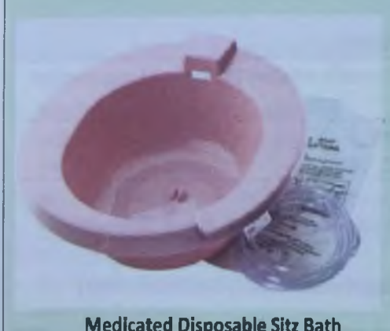
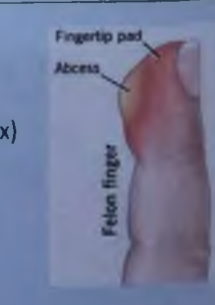
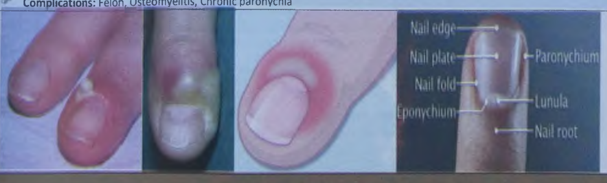

General Surgery
Acute abdomen algorithms, Tokyo Guidelines (TG18), biliary sepsis, pancreatitis Atlanta criteria, anorectal pathology, chronic pressure ulcers, soft tissue surgery, and digital pulp whitlows.
1. Presenting Complaint & History of Presenting Complaint
Make your clinical approach in a case of acute abdomen using the structured SOCRATES / OPQRST framework:
- Left chest → left arm/jaw: Suggestive of Ischemic Heart Disease (ACS).
- Flank → groin/scrotum: Feature of ureteric calculus (stone colic).
- Epigastrium → right scapula/shoulder: Biliary pathology (phrenic nerve/C3-C5 dermatome).
- Epigastrium → mid-back: Acute pancreatitis or penetrating posterior ulcer.
2. Review of Systems (ROS) Checklist
| System | Key Symptoms & Clinical Significance |
|---|---|
| Systemic | Fever, chills, rigors, jaundice, unexplained weight loss, anorexia, malaise, functional disability. |
| Upper GI | Dysphagia, odynophagia, indigestion, heartburn/pyrosis, nausea, vomiting, haematemesis, waterbrash. |
| Lower GI | Diarrhoea, absolute constipation (obstipation), melaena (black tarry stool), hematochezia (fresh rectal bleeding), steatorrhoea. |
| Genitourinary | Increased frequency, dysuria, urgency, gross or microscopic haematuria, loin pain. |
| Gynaecological | Length of menstrual cycle, amount of bleeding, dysmenorrhoea, intermenstrual bleeding, Last Menstrual Period (LMP mandatory to exclude ectopic). |
| Background | Complete detail of Past Medical History, Surgical History, Drug History (NSAIDs, anticoagulants, steroids), Family History, Social History (alcohol, smoking). |
3. Character of Pain
4. Patient Gestures in Pain Analysis
- Squeezing gesture over chest/epigastrium: Describes ischemic cardiac pain (Levine sign).
- Hand on flank gripping toward groin: Describes acute renal / ureteric colic.
- Rubbing retrosternal area up and down: Heartburn / severe reflux esophagitis.
- Rubbing buttock and lateral thigh: Sciatica / nerve root compression.
- Arms clenched tightly around mid-abdomen & rocking: Midgut colic / early bowel obstruction.
- Lying motionless with knees flexed, afraid to breathe or move: Generalized peritonitis (perforated viscus).
5. First Rule Out Critical Life-Threatening Etiologies
Heavy, dull, pressure/squeezing substernal or epigastric pain radiating to left shoulder/arm/jaw. Nausea, diaphoresis, syncope, anxiety.
Age > 60 yrs, atrial fibrillation, thrombophilia, vascular disease. Hallmark: Pain out of proportion to physical exam findings! Severe diffuse distension, vomiting, hematochezia.
Age > 50 yrs, sudden severe central abdominal/back pain, shock, hypotension, pulsatile midline mass, Grey Turner / Cullen signs.
Sudden severe diffuse pain, board-like rigidity, involuntary guarding, rebound tenderness, absent bowel sounds, loss of liver dullness on percussion.
Sudden severe, sharp, tearing chest or abdominal pain radiating to the back. Asymmetrical pulses / blood pressure deficit, syncope, new aortic regurgitation murmur.
Periumbilical pain migrating to right iliac fossa (RLQ), anorexia, low-grade fever, McBurney tenderness, Rovsing/Psoas/Obturator signs.
Colicky pain, obstipation (no flatus/feces), bilious/feculent vomiting, tympanic distension, high-pitched tinkling sounds or absent sounds, empty collapsed rectum.
Epigastric gnawing pain; Duodenal ulcer relieved by food; Gastric ulcer exacerbated by food. NSAID use history, anemia, occult bleeding.


Accurate anatomical localization is the single most valuable initial discriminator in acute abdomen. Below is the systematic Gastrointestinal vs Non-Gastrointestinal etiology matrix:
| Anatomical Quadrant | Gastrointestinal Causes | Non-Gastrointestinal Causes |
|---|---|---|
| Right Upper Quadrant (RUQ) |
|
|
| Epigastrium |
|
|
| Left Upper Quadrant (LUQ) |
|
|
| Right Lower Quadrant (RLQ) |
|
|
| Left Lower Quadrant (LLQ) |
|
|
| Suprapubic / Pelvic |
|
|
| Diffuse / Generalized |
|
|

The diagnostic laboratory workup must be guided by pre-test probability, vital signs stability, and specific diagnostic hypotheses:
- Leukocytosis (WBC > 11,000/μL) with left shift (≥ 75% neutrophils): Highly suggestive of acute bacterial inflammation (appendicitis, cholecystitis, diverticulitis, abscess).
- Hematocrit (Hct): Elevated Hct (hemoconcentration) signifies intravascular volume depletion (severe dehydration, bowel obstruction, pancreatitis third-spacing). Low Hct signifies acute occult hemorrhage (ruptured AAA, ectopic pregnancy, splenic rupture, hemorrhagic pancreatitis).
- Blood Urea Nitrogen (BUN) & Serum Creatinine: Evaluates dehydration, prerenal azotemia, acute kidney injury (AKI), or hepatorenal syndrome.
- Serum Electrolytes (Na+, K+, Cl-, HCO3-): Detects severe hypokalemia/hypochloremic metabolic alkalosis from persistent vomiting, or hyperkalemia from bowel necrosis and tissue breakdown.
- Cholestatic Markers: Elevated Total & Direct Bilirubin, Alkaline Phosphatase (ALP), and Gamma-Glutamyl Transferase (GGT) strongly indicate biliary obstruction (choledocholithiasis, cholangitis, extrinsic compression).
- Aminotransferases (ALT, AST): Extreme elevations (> 1,000 U/L) suggest acute viral/toxic hepatitis or acute ischemic hepatic injury; ALT > 150 U/L in pancreatitis suggests gallstone etiology.
- Serum Lipase: The investigation of choice for acute pancreatitis. Highly specific and remains elevated for 8–14 days. Value > 3× upper limit of normal is diagnostic.
- Serum Amylase: Rises quickly (within 2–12 hours) but normalizes in 3–5 days. Less specific (can rise in perforated ulcer, bowel ischemia, ruptured ectopic, renal failure, salivary disease).
- C-Reactive Protein (CRP): Levels > 150 mg/L at 48–72 hours correlate strongly with severe/necrotizing pancreatitis or deep intra-abdominal sepsis.
- Serum Procalcitonin: Excellent marker for systemic bacterial infection, septic shock, and infected pancreatic necrosis.
- Arterial Blood Gas (ABG) & Serum Lactate: Elevated lactate (> 2 mmol/L) with metabolic acidosis is a critical red flag for mesenteric ischemia, bowel gangrene, or septic shock.
- Urine Pregnancy Test (β-hCG): MANDATORY in EVERY woman of reproductive age presenting with acute abdominal or pelvic pain regardless of sexual or menstrual history, to rule out life-threatening ruptured ectopic pregnancy.
- Urine Routine Examination (R/E): Hematuria suggests renal/ureteric stones; pyuria/nitrites indicate UTI. (Microscopic pyuria may occur in appendicitis if adjacent to ureter/bladder).

Initial imaging must be driven strictly by hemodynamic stability and the working clinical diagnosis:
Erect Chest X-Ray (PA View): The single most sensitive plain radiograph for pneumoperitoneum. Capable of detecting as little as 1 mL of free intraperitoneal air under the right hemidiaphragm.
Abdominal X-Ray (Supine & Erect):
- Mechanical Small Bowel Obstruction: Centrally located dilated loops (> 3 cm), valvulae conniventes extending across full bowel diameter, multiple air-fluid levels in a classic "step-ladder" pattern, and absence of colorectal gas.
- Sigmoid Volvulus: Massive inverted "U-shaped" loop of dilated colon without haustra, originating from the pelvis and pointing toward the RUQ ("coffee-bean sign").
- Cecal Volvulus: Dilated cecum pointing toward the LUQ ("kidney-bean sign").
- Pneumatosis Intestinalis: Linear gas radiolucency within the bowel wall indicating transmural ischemia/infarction.
- Stones: Only 15–20% of gallstones are radiopaque; 60–80% of urinary calculi are visible on KUB.
Primary Indications: First-line imaging of choice for suspected biliary disease, gynecological/pelvic pathology, pediatric acute abdomen, and pregnancy.
- Acute Cholecystitis: Gallstones with acoustic shadowing, gallbladder wall thickening > 3–4 mm, pericholecystic fluid halo, and a positive sonographic Murphy's sign (maximal probe tenderness over the imaged gallbladder).
- Biliary Obstruction: Common bile duct (CBD) dilation (> 6–8 mm in diameter).
- Acute Appendicitis: Blind-ending, non-compressible, aperistaltic tubular structure > 6 mm outer diameter in RLQ, target appearance in transverse view, appendicolith.
- Gynecological Emergencies: Free fluid in pouch of Douglas, empty uterine cavity with adnexal mass / tubal ring sign (ectopic pregnancy), enlarged edematous ovary with decreased Doppler flow (ovarian torsion).
- FAST Exam (Focused Assessment with Sonography for Trauma): Rapid bedside detection of hemoperitoneum in Morison's pouch, splenorenal recess, and pelvis.
The Gold Standard: Highest diagnostic accuracy for undifferentiated acute abdomen, peritonitis, retroperitoneal processes, and complications.
- CT with IV Contrast: Standard for evaluating acute appendicitis, diverticulitis, mesenteric ischemia, bowel perforation, intra-abdominal abscesses, and acute pancreatitis.
- Non-Contrast CT (CT KUB): Modality of choice for suspected acute renal and ureteric calculi (high sensitivity for tiny non-opaque stones).
- CT Angiography (CTA): Mandatory for acute aortic dissection, ruptured AAA, and acute mesenteric arterial ischemia.
Magnetic Resonance Cholangiopancreatography (MRCP): Non-invasive imaging of choice for common bile duct stones (choledocholithiasis) with sensitivity > 95% and specificity > 98%.
MRI Abdomen/Pelvis: Safe non-radiation alternative in pregnant patients when ultrasound is inconclusive (e.g., suspected appendicitis in pregnancy).

Primary Survey: ABCD&E Protocol
Assess and secure Airway, ensure adequate Breathing (administer high-flow oxygen via face mask if SpO2 < 94% or in shock), support Circulation, assess Disability (GCS/pupils), and Expose the patient while preventing hypothermia.
Intravenous Access & Emergency Blood Sampling
Establish two large-bore peripheral IV cannulae (16G or 18G) immediately. Draw blood for emergency cross-matching (at least 2–4 units packed RBCs), CBC, Urea, Creatinine, Electrolytes, LFTs, Serum Amylase/Lipase, PT, APTT, INR, and β-hCG.
Aggressive Goal-Directed Fluid Resuscitation
Administer isotonic crystalloids (Ringer's Lactate or 0.9% Normal Saline). In hypotensive patients, deliver a rapid bolus of 500–1000 mL IV over 15–30 minutes. Target: Mean Arterial Pressure (MAP) ≥ 65 mmHg, urine output > 0.5 mL/kg/hour, heart rate < 100 bpm.
Strict NPO (Nil Per Os) & Bowel Rest
Strict bowel rest. Keep patient completely fasting until emergency surgical conditions have been conclusively ruled out or patient enters the OR.
Gastrointestinal Decompression (NG Tube)
Pass a wide-bore Nasogastric (NG) tube with continuous low-pressure suction in patients with persistent vomiting, gross abdominal distension, intestinal obstruction, or paralytic ileus to prevent aspiration pneumonia.
Urinary Foley Catheterization
Insert a Foley catheter with an hourly urometer bag to strictly monitor fluid balance and assess resuscitation efficacy.
Early Judicious Analgesia (Myth Dispelled!)
Clinical Fact: Providing titrated analgesia does NOT mask physical signs or impair diagnostic accuracy. Administer IV analgesia promptly once initial evaluation is underway:
- IV Paracetamol: 1g (Provas) IV infusion over 15 min TDS.
- IV Ketorolac: 30mg (Toradol) in 100ml NS IV (only if renal function is normal and no active bleeding).
- IV Opioid Option: Inj Nalbuphine 10mg (Kinz) or Tramadol 50–100mg (Tramol) + Inj Dimenhydrinate 50mg (Gravinate) diluted in 100ml 0.9% NS IV slow infusion.
Empiric IV Antibiotic Therapy (Within 1 Hour)
For patients with suspected peritonitis, bowel perforation, septic shock, or acute intra-abdominal sepsis, initiate broad-spectrum coverage within the first hour:
1. Inj. Ceftriaxone 1g to 2g (Rocephin, Titan) × IV × BD
PLUS 2. Inj. Metronidazole 500mg/100ml (Flagyl) × IV × TDS
In Penicillin/Cephalosporin Allergy: Inf. Ciprofloxacin 400mg/100ml (Novidate) IV BD + Flagyl 500mg IV TDS
If Septic Shock / Multi-Drug Resistance: Inj. Piperacillin/Tazobactam 4.5g (Tanzo, Tazocin) IV TDS OR Inj. Meropenem 1g (Meronem) IV TDS
Gastroprotection & Antiemetics
Inj. Omeprazole 40mg (Risek, Ruling) IV OD diluted in 100ml NS.
Inj. Ondansetron 8mg (Onset) IV OR Inj. Dimenhydrinate 50mg (Gravinate) IV TDS.
Correction of Coagulopathy & Electrolytes
Correct hypokalemia, hypomagnesemia, and acidosis. If INR > 1.5 and urgent surgery required, administer Fresh Frozen Plasma (FFP 10–15 mL/kg), Prothrombin Complex Concentrate (PCC), and IV Vitamin K (10mg slow IV).
Urgent Surgical Consultation & Theatre Transfer
Immediate operating theatre transfer for exploratory laparotomy or diagnostic laparoscopy in:
- Free intraperitoneal gas (pneumoperitoneum)
- Generalized peritonitis with abdominal rigidity
- Unstable ruptured AAA or ruptured ectopic pregnancy
- Strangulated bowel obstruction or mesenteric ischemia
- Blunt/penetrating trauma with refractory hemodynamic instability

Clinical Features & Physical Signs
Chief Complaints (C/C):
- Abdominal Pain: Initial dull periumbilical pain for the first 12–24 hours (visceral pain from midgut small bowel origin), which then migrates and localizes sharply to the Right Iliac Fossa / Right Lower Quadrant (RIF/RLQ) due to somatic irritation of the parietal peritoneum by the inflamed appendix.
- Constitutional Symptoms: Anorexia ("if patient is hungry, question the diagnosis of appendicitis!"), nausea, vomiting (typically occurs after pain onset), and low-grade pyrexia.
- Urinary Symptoms: Burning micturition (dysuria) or urinary frequency can occur if an inflamed retrocecal or pelvic appendix lies directly in contact with the right ureter or bladder wall.
Physical Examination Findings
- Pediatric Caution: Always examine the throat and ears in children to exclude mesenteric adenitis secondary to viral tonsillitis/pharyngitis.
- Vitals: Mildly elevated pulse rate (+/-) and low-grade fever (+/-). Marked high fever (> 38.5°C) indicates perforation or periappendiceal abscess.
- McBurney's Point Tenderness: Maximal tenderness at junction of lateral 1/3 and medial 2/3 of a line from ASIS to umbilicus.
- Rebound Tenderness (Blumberg Sign): Sudden release of deep palpation produces sharp pain indicating local peritonitis.
- Rovsing's Sign: Deep palpation of the Left Lower Quadrant (LLQ) produces referred pain in the Right Lower Quadrant (RLQ).
- Psoas Sign: Pain on passive hyperextension of the right hip while lying in left lateral position (suggests retrocecal appendicitis touching the psoas muscle).
- Obturator Sign: Pain on passive internal rotation of the flexed right hip (suggests pelvic appendicitis irritating the obturator internus).
- Digital Rectal Examination (DRE): Right-sided pelvic tenderness if pelvic appendix is present.
Laboratory & Imaging Workup
Alvarado Score (MANTRELS)
Interactive 10-Point Scoring System
Stepwise Clinical Management & Prescription (Rx)
- Maintain ABCD&E: Vital signs monitoring (BP, PR, RR, Temperature, SpO2).
- IV Access: Pass two large-bore IV cannulae (16G or 18G).
- Laboratory Orders: Send CBC, Blood Urea, Serum Creatinine, Electrolytes, LFTs, PT/APTT/INR, Viral Markers (Anti-HCV, HBsAg), Blood Grouping & Cross-match, and RBS.
- Strict NPO (Bowel Rest): No oral feeds until surgical decision.
- Gastrointestinal Decompression: Pass Nasogastric (NG) tube and Foley's catheterization for urine output record.
- IV Fluid Hydration:
• Inf. Ringer's Lactate (R/L) × IV × BD
• Inf. 0.9% Normal Saline (NS) OR D5%W × IV × OD (adjust for losses). - Empiric IV Antibiotics (Preoperative Prophylaxis):
• Inj. Ceftriaxone 1g (Brands: Rocephin, Titan, Cefotax) × IV × BD
PLUS Inj. Metronidazole 500mg/100ml (Brand: Flagyl) × IV × TDS - IV Pain Management / Analgesia:
• Inj. Paracetamol 1g/100ml (Brands: Provas, Paracet) × IV infusion × TDS / SOS
• OR Inj. Ketorolac 30mg/ml (Brand: Toradol) in 4–8ml 0.9% NS × IV
• OR for Severe Pain: Inj. Tramadol 100mg/2ml (Brand: Tramol) + Inj. Dimenhydrinate 50mg/ml (Brand: Gravinate) diluted in 100ml 0.9% NS × IV slow
• OR Inj. Nalbuphine 10mg/ml (Brand: Kinz) + Inj. Dimenhydrinate 50mg (Gravinate) diluted in 100ml NS × IV - Gastroprotection:
• Inj. Omeprazole 40mg (Brands: Risek, Ruling) × IV diluted in 100ml 0.9% NS × OD - Antiemetic Therapy:
• Inj. Metoclopramide 10mg/2ml (Brand: Metaclon) × IV × TDS
• OR Inj. Dimenhydrinate 50mg/ml (Brand: Gravinate) × IV × TDS
• OR Inj. Ondansetron 8mg/4ml (Brands: Onset, Onseron) diluted in 50–100ml 0.9% NS × IV over 15 min. - Definitive Surgical Intervention: After completion of preoperative resuscitation, arrange blood transfusion if indicated and transfer to the Operation Theatre for Emergency Laparoscopic or Open Appendectomy.


Pathophysiology & Presentation
Etiology & Risk Factors: Gallbladder stone impaction in cystic duct → acute luminal distension, mucosal ischemia, chemical inflammation, and secondary bacterial proliferation. Classically associated with the Rule of 6 Fs: Fat, Female, Forty, Flatulent, Fertile, and Fair-skinned.
Chief Complaints (C/C):
- Right Hypochondriac (RHC / RUQ) severe, constant, sharp pain due to local peritoneal irritation.
- Pain is typically prolonged (lasting > 6 hours), distinguishing it from simple uncomplicated biliary colic (< 6 hours).
- Postprandial exacerbation (especially after heavy, fatty meals).
- Referred Pain: Radiates to the right shoulder and right infrascapular area (Boas sign) due to phrenic nerve (C3–C5 dermatome) sensory irritation.
- Associated fever, malaise, anorexia, nausea, and vomiting.
Physical Examination Findings
- Murphy's Sign Positive: Sudden inspiratory arrest (pause in breathing) upon deep palpation of the right upper quadrant during inspiration due to sharp pain when the inflamed gallbladder touches the examiner's fingers. (May be falsely negative in elderly > 60 years).
- Boas' Sign: Hyperesthesia to light touch in the right lower scapular or infrascapular zone.
- Palpable Mass: A tender, tense, rounded mass (swollen gallbladder covered by omentum) may be palpable in the RUQ in 30–40% of cases.
- Jaundice: Mild jaundice can occur, but deep jaundice indicates common bile duct obstruction (choledocholithiasis or Mirizzi syndrome).
Tokyo Guidelines (TG18) Diagnostic Criteria
| Criterion Category | Clinical Features |
|---|---|
| A. Local Signs of Inflammation | Murphy's sign, RUQ pain, tenderness, or palpable RUQ mass. |
| B. Systemic Signs of Inflammation | Fever, elevated C-Reactive Protein (CRP > 3 mg/dL), Leukocytosis (WBC > 10,000/μL). |
| C. Radiological Findings | Ultrasound findings characteristic of acute cholecystitis (GB wall > 4 mm, pericholecystic fluid halo, sonographic Murphy's, impacted stone). |
Diagnostic Interpretation:
- Suspected Diagnosis: One item from A + One item from B.
- Definite Diagnosis: One item from A + One item from B + Confirmatory imaging from C.
Tokyo Guidelines Severity Grading & Definitive Management
Healthy patient with mild gallbladder inflammation and NO organ dysfunction.
Associated with any of: WBC > 18,000/μL, palpable tender RUQ mass, symptom duration > 72 hours, or marked local inflammation (gangrenous, emphysematous, pericholecystic abscess).
Accompanied by dysfunction of at least one organ system (Cardiovascular, Neurological, Respiratory, Renal, Hepatic, or Hematological).
Avoid Ceftriaxone in acute cholecystitis and biliary colic! According to clinical literature, patients receiving ceftriaxone can develop drug-induced biliary sludge (ceftriaxone pseudolithiasis), which precipitates existing gallstones, triggers acute cholecystitis, and causes biliary ductal obstruction.
Inpatient Treatment Protocol (Rx)
- Maintain ABCD&E, two large-bore IV lines, vitals monitoring (BP, PR, RR, Temp, SpO2).
- Strict NPO (Bowel Rest): 2–3 days.
- Nasogastric (NG) Tube Aspiration: Aspiration of gastric HCl eliminates the cephalic/gastric stimulus for cholecystokinin (CCK) release and bile secretion, resting the gallbladder and reducing spasms. NG tube removed when tenderness subsides, followed by clear liquids.
- IV Fluid Hydration: Inf. Ringer's Lactate × BD + 0.9% Normal Saline or D5%W × IV × OD.
- Empiric IV Antibiotics (Ceftriaxone-Free Regimens):
• Inj. Metronidazole 500mg/100ml (Brand: Flagyl) × IV × TDS
PLUS ONE OF THE FOLLOWING:
• Inj. Cefuroxime 750mg (Brand: Zinacef) × IV × BD
• OR Inj. Ceftazidime 1g (Brands: Fortum, Fortazim) × IV × BD
• OR Inf. Ciprofloxacin 400mg/100ml (Brand: Novidat) × IV × BD
• In Severe / Grade II–III Sepsis: Inj. Piperacillin/Tazobactam 4.5g (Tanzo) IV TDS OR Inj. Meropenem 1g (Meronem) IV TDS. - IV Gastroprotection: Inj. Omeprazole 40mg (Brands: Risek, Ruling) × IV in 100ml NS × OD.
- Analgesia: Inj. Paracetamol 1g (Provas) IV TDS / SOS OR Inj. Ketorolac 30mg (Toradol) IV OR Inj. Tramadol 100mg (Tramol) + Gravinate 50mg IV.
- Antispasmodic for Biliary Spasm:
• Inj. Drotaverine 40mg to 80mg (Brands: Nospa, Relispa) IV STAT
• OR Inj. Phloroglucinol + Trimethylphloroglucinol 40+0.04mg/4ml (Brands: Spasrid, Anafortan Plus, Spasfon) diluted in 100ml 0.9% NS × IV STAT. - Surgical Intervention: Elective/Early Laparoscopic Cholecystectomy ideally within 24–72 hours of symptom onset. Interval cholecystectomy performed after 6–8 weeks in delayed presentations.


Definition & Stone Classification
Definition: Presence of abnormal concretions (calculi) within the gallbladder lumen. Female-to-male ratio is 2–3:1 with peak incidence > 40 years.
| Stone Type | Composition | Etiology & Characteristics | Radiopacity |
|---|---|---|---|
| Cholesterol Stones (75–80%) | > 50% crystalline cholesterol monohydrate | Bile supersaturation with cholesterol, gallbladder hypomotility, rapid nucleation. Associated with obesity, rapid weight loss, multiparity, clofibrate. | Radiolucent (only 10–15% calcified) |
| Black Pigment Stones (10–15%) | Calcium bilirubinate & copper polymers | Chronic hemolysis (sickle cell, thalassemia, hereditary spherocytosis), cirrhosis, ileal resection. Sterile bile origin. | Radiopaque (50–70% visible on X-ray) |
| Brown Pigment Stones (< 5%) | Calcium salts of unconjugated bilirubin & fatty acids | Biliary tract infection (bacterial beta-glucuronidase), stasis, foreign bodies, biliary parasites (Clonorchis sinensis, Ascaris). | Radiolucent |
Clinical Features: Asymptomatic vs Biliary Colic
- Asymptomatic Gallstones: > 80% of patients remain completely asymptomatic throughout life (discovered incidentally on ultrasound).
- Biliary Colic:
- Constant, dull or aching pain in Right Upper Quadrant or epigastrium. (Despite the term "colic", the pain is typically steady and constant rather than fluctuating spasmodically).
- Duration: Typically lasts 1 to 5 hours (< 6 hours). Spontaneously subsides once the impacted stone falls back into the gallbladder lumen.
- Triggers: Precipitated by ingestion of fatty or greasy meals (CCK release causes gallbladder contraction against the blocked neck).
- Radiation: Radiates around the right costal margin to the epigastrium, right scapular tip, or mid-back.
- Early satiety, abdominal fullness, bloating, and dyspepsia.
Diagnostic Workup
Management & Surgical Strategy (Rx)
1. Asymptomatic Gallstones: Watchful waiting. Prophylactic cholecystectomy is NOT indicated except in high-risk subsets: calcified porcelain gallbladder (high risk of carcinoma), stones > 3 cm, congenital hemolytic anemia, or candidates for bariatric surgery.
2. Acute Episode of Biliary Colic:
- Strict NPO, IV fluid hydration (0.9% NS / Ringer's Lactate).
- NSAIDs are first-line for pain: Inj. Ketorolac 30mg (Toradol) IV OR Inj. Diclofenac 75mg (Voltral) IM (NSAIDs inhibit prostaglandin-mediated gallbladder wall distension).
- Antispasmodic: Inj. Drotaverine 40mg (Nospa) IV STAT.
3. Definitive Gold Standard Treatment: Elective Laparoscopic Cholecystectomy (Day-case surgical procedure of choice).

Pathogenesis & Clinical Presentation
Definition: Presence of gallstones within the Common Bile Duct (CBD). Primary stones form de novo within bile ducts (usually brown pigment); Secondary stones migrate from the gallbladder through the cystic duct (> 90% of cases).
Treatment is recommended in ALL patients with choledocholithiasis, even if asymptomatic, because of the high risk of life-threatening complications (acute cholangitis and acute pancreatitis).
Chief Complaints (C/C):
- Right Upper Quadrant / Epigastric Pain: More severe, deep, and prolonged (lasting > 6 hours) than simple cholelithiasis, postprandial, radiating to the right scapula/back.
- Extrahepatic Cholestatic Jaundice: Scleral icterus, tea-colored dark urine (conjugated hyperbilirubinemia), pale acholic clay-colored stools, and generalized pruritus (bile salt deposition in skin).
- Nausea, vomiting, anorexia.
Diagnostic Workup
| Investigation | Diagnostic Findings & Significance |
|---|---|
| Liver Function Tests (LFTs) | Classic cholestasis pattern: Marked ↑ Total & Direct Bilirubin, ↑ Alkaline Phosphatase (ALP), ↑ GGT. Mild to moderate elevation in ALT/AST. |
| Serum Lipase & Amylase | Mandatory to rule out secondary gallstone pancreatitis. |
| Ultrasound Abdomen | First imaging test. Detects gallbladder stones and dilated CBD (> 8 mm) in patients with gallstones and jaundice. Direct visualization of CBD stones on US is only ~50% sensitive. |
| MRCP (Magnetic Resonance) | Non-invasive gold standard imaging. Sensitivity 95%, Specificity 98%. Accurately demonstrates stone size, number, and exact anatomical location. |
| ERCP (Endoscopic Retrograde) | Diagnostic AND therapeutic gold standard. Allows sphincterotomy, basket/balloon stone extraction, and stent placement. |
Stepwise Treatment Protocol (Rx)
- Maintain ABCD&E, two large-bore IV lines, vitals monitoring (BP, PR, RR, Temp, SpO2).
- Strict NPO, IV fluid therapy with Ringer's Lactate or 0.9% Normal Saline.
- Pass NG tube and Foley catheter if severe vomiting/distension.
- Empiric IV Antibiotics (Covering Gram-negative coliforms & enterococci):
• Inj. Metronidazole 500mg/100ml (Flagyl) × IV × TDS
PLUS ONE OF THE FOLLOWING:
• Inj. Ceftriaxone 1g (Rocephin, Titan) × IV × BD
• OR Inf. Ciprofloxacin 400mg/100ml (Novidate) × IV × BD
• OR Inj. Ceftazidime 1g (Fortum) × IV × BD
• OR Inj. Cefepime 1g (Uceph, Cefstar) × IV × BD
• If Severe Infection / High Risk: Inj. Imipenem-Cilastatin 500mg (Tienam) IV TDS OR Inj. Meropenem 1g (Meronem) IV TDS OR Inj. Piperacillin-Tazobactam 4.5g (Tanzo) IV TDS. - IV Pain Management:
• Inj. Ketorolac 30mg/ml (Toradol) in 4–8ml 0.9% NS × IV
• OR Inj. Buprenorphine 0.3mg/ml (Buepron, Norpin) + Gravinate 50mg in 100ml NS × IV
• OR Inj. Nalbuphine 10mg/ml (Kinz) + Gravinate 50mg in 100ml NS × IV. - Gastroprotection: Inj. Omeprazole 40mg (Risek, Ruling) × IV × OD.
- Surgical / Endoscopic Options for Duct Clearance:
- Option A (Two-Stage): Preoperative ERCP with endoscopic sphincterotomy (EST) and stone extraction, followed by elective interval laparoscopic cholecystectomy.
- Option B (Single-Stage): Laparoscopic Cholecystectomy combined with Laparoscopic Common Bile Duct Exploration (LCBDE).
- Option C: Mechanical lithotripsy or electrohydraulic/laser lithotripsy for large impacted CBD stones.

Clinical Manifestations: The Classic Signs
- Right Upper Quadrant (RUQ) Abdominal Pain: Severe, constant biliary ache.
- High Spiking Fever with Rigors/Chills: Intermittent bacteremia.
- Jaundice: Dark urine, scleral icterus, fluctuating pale stools.
Charcot's Triad PLUS:
- Hypotension / Septic Shock: SBP < 90 mmHg, cold clammy extremities.
- Altered Mental Status / Confusion: Toxic encephalopathy, lethargy.
Tokyo Guidelines (TG18) Diagnostic Criteria
| Criterion | Clinical & Laboratory Indicators |
|---|---|
| A. Systemic Inflammation | Fever and/or chills with rigors (≥ 38.0°C); WBC < 4,000 or > 10,000/μL; elevated CRP. |
| B. Cholestasis | Jaundice (Total Bilirubin ≥ 2 mg/dL); abnormal LFTs (ALP, GGT, AST, ALT > 1.5× ULN). |
| C. Imaging Findings | Biliary dilatation or evidence of underlying etiology (CBD stones, stricture, stent occlusion). |
Diagnostic Rule: Suspected = A + B (or C); Definite Diagnosis = A + B + C.
Severity Grading (Tokyo Guidelines TG18)
Responds to initial medical therapy; does not meet criteria for Grade II or Grade III.
Associated with any two of: WBC > 12,000 or < 4,000/μL, Temperature ≥ 39.0°C, Age ≥ 75 years, Total Bilirubin ≥ 5 mg/dL, or Serum Albumin < 70% of lower normal limit.
Accompanied by dysfunction in at least one organ system: Cardiovascular (hypotension requiring dopamine ≥ 5 μg/kg/min or norepinephrine), Neurological (impaired consciousness), Respiratory (PaO2/FiO2 < 300), Renal (oliguria, creatinine > 2.0 mg/dL), Hepatic (PT-INR > 1.5), or Hematological (platelets < 100,000/μL).
Emergency Resuscitation & Prescription (Rx)
- Maintain ABCD&E, high-flow oxygen, two large-bore IV lines, continuous vitals and SpO2 monitoring.
- Blood Cultures: Draw 2 sets of peripheral blood cultures immediately prior to starting antibiotics.
- Strict NPO, pass NG tube and Foley catheter (strict hourly urine monitoring).
- Fluid Resuscitation: Aggressive IV boluses of Ringer's Lactate or Normal Saline (500–1000 mL boluses) to restore tissue perfusion.
- Urgent Broad-Spectrum IV Antibiotics:
• Inj. Metronidazole 500mg/100ml (Flagyl) × IV × TDS
PLUS ONE OF:
• Inj. Ceftriaxone 1g (Rocephin, Titan) × IV × BD
• OR Inf. Ciprofloxacin 400mg/100ml (Novidate) × IV × BD
• OR Inj. Ceftazidime 1g (Fortum) × IV × BD
• OR Inj. Cefepime 1g (Uceph) × IV × BD
• In Grade II / III (Severe) Cholangitis: Inj. Piperacillin-Tazobactam 4.5g (Tanzo) IV TDS OR Inj. Meropenem 1g (Meronem) IV TDS. - IV Analgesia: Inj. Ketorolac 30mg (Toradol) in 4ml NS IV. If severe pain: Inj. Tramadol 100mg (Tramol) OR Inj. Nalbuphine 10mg (Kinz) + Gravinate 50mg in 100ml NS IV slow.
- Gastroprotection: Inj. Omeprazole 40mg (Risek, Ruling) × IV × OD.
- EMERGENCY BILIARY DECOMPRESSION (The Definitive Life-Saving Step):
- Grade I: Antibiotics and supportive care; if no response within 24–48 hours, perform early biliary drainage.
- Grade II: Early endoscopic (ERCP) or percutaneous transhepatic biliary drainage (PTBD) within 24–48 hours.
- Grade III: Immediate emergency biliary drainage (ERCP with sphincterotomy/stenting or PTBD) along with intensive organ support in the ICU.

Etiology: The Classic Mnemonic "I GET SMASHED"
Clinical Features & Physical Exam
- Abdominal Pain: Sudden onset of severe, excruciating, constant epigastric pain that characteristically radiates straight through to the mid-back (50% of cases). Exacerbated by lying supine and partially relieved by sitting upright and leaning forward (the "pancreatic position").
- Persistent nausea, retching, and bilious vomiting that does NOT relieve the abdominal pain.
- Abdominal distension, reduced or absent bowel sounds (due to localized or generalized paralytic ileus).
- Signs of Retroperitoneal Hemorrhage (Severe Necrotizing Pancreatitis):
- Cullen's Sign: Periumbilical blue-purple ecchymosis (tracking of retroperitoneal blood along the falciform ligament).
- Grey Turner's Sign: Flank ecchymosis / bruising (tracking of hemoperitoneum through the posterior pararenal space to abdominal wall).
- Fox's Sign: Bruising over the upper anterior thigh below the inguinal ligament.
Prognostic Scoring & Severity Systems
- Mild Acute Pancreatitis: Absence of organ failure AND absence of local or systemic complications. Resolves quickly.
- Moderately Severe Acute Pancreatitis: Transient organ failure (resolves within < 48 hours) AND/OR local complications (fluid collections, pseudocyst, necrosis).
- Severe Acute Pancreatitis: Persistent organ failure (> 48 hours), single or multiple organs (modified Marshall score ≥ 2 for shock, respiratory failure, or renal failure). Mortality 20–40%.
CT scan is performed ideally > 72 hours (or 5–7 days) after symptom onset (early CT underestimates necrosis):
- Balthazar Grade: Normal (0), Enlargement (1), Peripancreatic inflammation (2), Single fluid collection (3), ≥ 2 collections / retroperitoneal gas (4).
- Parenchymal Necrosis: None (0), ≤ 30% (2), 30–50% (4), > 50% (6).
- CTSI Interpretation: 0–3 points: Mild; 4–6 points: Moderate; 7–10 points: Severe (high mortality).
At Admission (0 Hours) — GA LAW:
- Glucose > 200 mg/dL (11 mmol/L)
- Age > 55 years
- LDH > 350 IU/L
- AST > 250 IU/L
- WBC > 16,000/μL
During First 48 Hours — C HOBBS:
- Calcium (serum) < 8 mg/dL (2 mmol/L)
- Hematocrit drop > 10%
- Oxygen (PaO2) < 60 mmHg
- BUN increase > 5 mg/dL (1.8 mmol/L)
- Base deficit > 4 mEq/L
- Sequestration of fluid > 6 L
Interpretation: Score ≥ 3 indicates severe pancreatitis with high mortality.
1 point for each at 24 hours: BUN > 25 mg/dL; Impaired mental status; SIRS ≥ 2 criteria; Age > 60; Pleural effusion on CXR. Score ≥ 3 predicts high in-hospital mortality.
Stepwise Management Protocol (Rx)
- Maintain ABCD&E: Oxygen therapy if hypoxic (SpO2 < 94%). Establish two large-bore IV lines.
- Laboratory Investigations: Serum Lipase (diagnostic), Amylase, CBC, BUN, Creatinine, Electrolytes, Serum Calcium, Blood Glucose, LFTs, CRP, Arterial Blood Gas (ABG), and Serum Lactate.
- Goal-Directed IV Fluid Resuscitation (Cornerstone of Therapy):
- Fluid of Choice: Balanced crystalloids — Ringer's Lactate (LR) is preferred over Normal Saline (reduces systemic acidosis and SIRS).
- Stable Patients: Infuse at 5–10 mL/kg/hour (250–500 mL/hour).
- Unstable / Shock: Rapid bolus of 500–1000 mL over 15–30 minutes, repeated as needed.
- Clinical Targets: Heart rate < 120 bpm, MAP 65–85 mmHg, urine output > 0.5–1.0 mL/kg/hour, and hematocrit between 35–44%.
- Nasogastric (NG) Tube: Not routinely required; indicated only for intractable vomiting or severe paralytic ileus/gastric distension.
- Analgesia: Prompt multimodal analgesia. Inj. Paracetamol 1g (Provas) IV TDS + Inj. Nalbuphine 10mg (Kinz) or Inj. Tramadol 100mg (Tramol) + Gravinate 50mg in 100ml NS IV slow.
- Nutritional Support: Early oral feeding with low-fat solid or liquid diet as soon as abdominal pain subsides and ileus resolves. Enteral tube feeding (NG or nasojejunal) is superior to TPN if oral feeds not tolerated.
- Prophylactic Antibiotics: NOT recommended for sterile acute pancreatitis! Indicated ONLY for confirmed or strongly suspected infected necrosis:
• Inj. Meropenem 1g (Meronem) × IV × TDS
• OR Inj. Imipenem-Cilastatin 500mg (Tienam) × IV × TDS
• OR Inf. Ciprofloxacin 400mg × IV × BD + Flagyl 500mg × IV × TDS (drugs with proven pancreatic tissue penetration). - Urgent Therapeutic ERCP (within 24–48 hours): Indicated for severe acute biliary pancreatitis with concurrent acute cholangitis or persistent common bile duct obstruction.

Pathogenesis & Clinical Presentation
Definition: A longitudinal tear or ulcer in the anoderm distal to the dentate line. > 90% occur in the posterior midline (where the blood supply to the anoderm is least abundant and muscle support is weakest); ~10% occur in the anterior midline (more common in females following vaginal delivery). Lateral fissures are atypical and should raise suspicion for Crohn's disease, tuberculosis, HIV/syphilis, or anal carcinoma.
Chief Complaints (C/C):
- Severe, excruciating sharp, knife-like or tearing pain during and after defecation: Pain lasts from several minutes to hours post-defecation, causing patients to dread and avoid bowel movements (worsening constipation).
- Rectal Bleeding: Small amount of bright red blood seen on toilet paper or streaking the side of hard stools (never mixed with stool).
- Associated perianal itching (pruritus ani), burning, and mucopurulent perianal discharge.
Physical Examination
- Inspection: Gently separating the buttocks reveals a longitudinal slit or ulcer in the midline.
- Chronic Fissure Triad:
- Deep ulcer with pale white transverse fibers of the internal anal sphincter visible at its base.
- Sentinel Skin Tag (Sentinel Pile): Hypertrophic edematous skin tag at the distal external margin.
- Hypertrophied Anal Papilla: Enlarged polypoid papilla at the proximal dentate line margin.
- Digital Rectal Examination (DRE): Defer in acute phase! Extremely painful and induces severe sphincter spasm. DRE can be performed later under local anesthesia or once acute pain settles.
The Medicated Sitz Bath Protocol
Mechanism: Sitting in warm water is a potent natural vasodilator that relaxes the hypertonic internal anal sphincter, reduces anal canal resting pressure, relieves ischemic spasms, cleanses perianal discharge, and accelerates wound healing.
- Setting: Fill a clean sitz bath basin or tub with comfortably warm water (38–40°C).
- Additive: Add a small pinch of Potassium Permanganate (KMnO4) to make a faint light pink solution, or warm saline.
- Duration: Sit with the perineum completely immersed for 15–20 minutes, 2 to 3 times daily and invariably after every bowel movement.
Conservative & Pharmacotherapy Regimen (Rx)
- General Measures & Dietary Regulation:
- High-fiber diet (25–30g/day) rich in raw vegetables, fruits, bran, whole grains.
- Adequate daily water intake (6–8 large glasses / 2–3 liters of water per day).
- Bulk-forming laxative: Psyllium husk (Ispaghol) 1–2 tablespoons in water at bedtime.
- Stool Softener:
• Syp. Lactulose 30ml (Brands: Duphalac, Lilac) × orally at bedtime (0 + 0 + 1) to produce soft, formed stools without straining. - Topical Chemical Sphincterotomy (First-Line Healer):
• Glyceryl Trinitrate (GTN) 0.2% ointment × apply pea-sized amount to anal verge BD (1 + 0 + 1). Relaxes the internal sphincter and restores anoderm microvascular blood flow (heals 65–70% of fissures).
Patient Warning: Can cause transient throbbing headaches and lightheadedness due to systemic absorption.
• Alternative (Fewer Headaches): Diltiazem 2% gel or Nifedipine 0.2% ointment applied BD. - Topical Anesthetic Jelly:
• Lidocaine 2% jelly (Brands: Xyloaid, Lignocaine) × apply a small dab 10 minutes before defecation and after sitz bath for immediate symptomatic pain relief. - Gastroprotection:
• Cap. Esomeprazole 40mg (Brands: Esso, Nexum) × 1 cap daily 30 minutes before breakfast (0 + 0 + 1). - Antibiotic Coverage (If secondary soft tissue infection/induration):
• Tab. Metronidazole 400mg (Brand: Flagyl, Metrozine) × 1 tab TDS (1 + 1 + 1) for 5–7 days
PLUS: Cap. Cephalexin 500mg (Brand: Ceporex, Keflex) × 1 cap BD/TDS OR Cap. Cefixime 400mg (Brand: Cefiget) × 1 cap OD. - Surgical Intervention for Chronic Refractory Fissures: Patients failing 6–8 weeks of medical therapy are candidates for Lateral Internal Sphincterotomy (LIS) — the surgical gold standard with > 95% permanent cure rate.


Anatomy & Classification
Definition: Hemorrhoids are symptomatic enlargement and distal displacement of the normal anal cushions (vascular plexuses in the submucosa at 3, 7, and 11 o'clock positions in the lithotomy position).
| Characteristic | Internal Hemorrhoids | External Hemorrhoids |
|---|---|---|
| Anatomical Location | Originates proximal (above) to the pectinate / dentate line. | Originates distal (below) to the dentate line. |
| Epithelial Lining | Columnar or transitional epithelium. | Stratified squamous epithelium (anoderm/skin). |
| Nerve Innervation | Visceral nerve supply (insensitive to pain and touch; painless bleeding). Can be ligated or banded without anesthesia! | Somatic sensory nerve supply (pudendal nerve; highly sensitive to pain; acutely painful when thrombosed). Cannot be banded! |
| Clinical Features | Painless bright red rectal bleeding coating stools, mucous discharge, prolapse of piles through the anal verge. | Painful bluish subcutaneous perianal nodule (external thrombosed pile). "5-day painful self-curing lesion" that resolves into a skin tag. |
Classification of Internal Hemorrhoids (By Degree of Prolapse)
Painless bright red bleeding only. The vascular cushions bleed on defecation but do NOT prolapse out of the anal canal.
Piles prolapse through the anus upon straining / defecation, but reduce spontaneously back into the canal once defecation ceases.
Piles prolapse upon defecation or walking, and do NOT reduce spontaneously; require manual digital reduction by the patient.
Piles are permanently prolapsed, irreducible, and chronically exposed at the anal verge. High risk of strangulation, ulceration, and gangrene.
Conservative & Pharmacotherapy Regimen (Rx)
- Phlebotropic Flavonoid Therapy (First-Line Anti-inflammatory & Hemostatic):
• Tab. Micronized Purified Flavonoid Fraction (MPFF) 500mg (Brand: Daflon 500mg)
Acute Bleeding Attack: 2 tablets TDS (6 tablets/day) for 4 days, then 2 tablets BD (4 tablets/day) for 3 days.
Chronic Maintenance: 1 tablet BD for 2–3 months. (Improves microvascular tone, reduces capillary fragility, stops bleeding). - Topical Analgesic & Anti-Inflammatory Ointments:
• Topical Posterisan Forte Ointment OR Hadensa Forte Ointment × apply twice daily (1 – 0 – 1) using the specialized intra-anal nozzle/applicator.
• PLUS: Lidocaine 2% jelly (Xyloaid) applied before bowel movements. - Stool Softening & Bulking:
• Syp. Lactulose 30ml (Duphalac, Lilac) × at bedtime (0 – 0 – 30ml). - Gastroprotection:
• Cap. Omeprazole 40mg (Risek, Ruling) × 1 cap daily 30 minutes before meals. - Systemic Analgesia for Severe Rectal Pain:
• Tab. Diclofenac sodium 50mg (Brands: Voren, Voltral) × 1 tab BD
• OR Tab. Tramadol + Paracetamol (Brands: Distalgesic, Pentra Plus) × 1 tab BD. - Management of Chronic Anemia: Chronic blood loss leads to iron deficiency anemia. Send CBC, Serum Ferritin, and correct with oral ferrous sulphate or Inj. Iron Sucrose (Venofer) IV infusion / blood transfusion if Hb < 8 g/dL.
Outpatient Procedures & Operative Interventions
| Procedure | Clinical Indications & Technique |
|---|---|
| Rubber Band Ligation (Barron Banding) | Treatment of choice for 1st, 2nd, and select 3rd degree internal hemorrhoids. Elastic bands applied 1 cm above dentate line cause ischemic necrosis and sloughing in 7–10 days. |
| Injection Sclerotherapy | Indicated for 1st and early 2nd degree bleeding piles. Injection of 5% Phenol in almond oil into the submucosa at the base of the pile to induce fibrosis. |
| Infrared Photocoagulation | Done for 1st and 2nd degree hemorrhoids; thermal coagulation of submucosal vessels. |
| Open Hemorrhoidectomy (Milligan-Morgan) | Excision of pile pedicles leaving the mucosal bridges open to granulate. Gold standard for 3rd and 4th degree mixed hemorrhoids. |
| Closed Hemorrhoidectomy (Ferguson) | Excision of hemorrhoidal bundles followed by primary continuous suture closure of anoderm and mucosa. |
| Stapled Hemorrhoidopexy (Longo's Procedure) | Circular endo-stapler excises a ring of redundant rectal mucosa above the dentate line and interrupts hemorrhoidal arterial inflow; significantly less postoperative pain. |


Etiology & Pathogenesis
Cryptoglandular Hypothesis: Infection originates from obstructed anal crypt glands at the level of the dentate line that penetrate the internal sphincter. Bacteria proliferate, forming an intersphincteric abscess that tracks along pelvic fascial planes.
Epidemiology: More common in men (2:1). Most common organisms: Escherichia coli (most common), Bacteroides fragilis, Staphylococcus aureus, Enterococcus faecalis, and Streptococcus spp.
Predisposing Conditions: Fistula-in-ano (most common), Crohn's disease, Diabetes mellitus, and immunosuppression (HIV, chemotherapy).
Anatomical Subtypes
Most common. Located superficially beneath the perianal skin. Presents with tender, erythematous, fluctuant swelling directly at the anal verge.
Second most common. Fills the large fatty ischiorectal fossa. Because fat offers low resistance, abscess grows very large before manifesting externally. Presents with diffuse brawny induration, swinging pyrexia, and severe constitutional toxicity.
Located in the submucosa above the dentate line. Presents with smooth, tender, soft boggy swelling bulging into the rectal lumen on DRE.
Located above the levator ani muscle. Frequently secondary to intra-abdominal pelvic sepsis (diverticulitis, appendicitis, salpingitis). Deep pelvic pain and high swinging fever with minimal perianal signs.
Emergency Management & Prescription (Rx)
- Preoperative Resuscitation & Analgesia:
• Inj. Ceftriaxone 1g to 2g (Brand: Titan, Rocephin) × IV STAT
• Inj. Paracetamol 1g (Brand: Provas) × IV STAT
• Inj. Ketorolac 30mg (Brand: Toradol) in 8ml 0.9% NS × IV. - Definitive Surgical Incision & Drainage (I&D):
- Perform under general or spinal anesthesia.
- Make a cruciate incision over the area of maximum fluctuance as close to the anal verge as possible to minimize the length of any potential future fistula tract.
- Excise the skin corners ("dog-ears") to prevent premature superficial skin closure.
- Break down all internal loculations with a gloved finger or blunt hemostat.
- Copious irrigation with warm saline. Pack cavity loosely with antiseptic ribbon gauze.
- Postoperative Discharge Pharmacotherapy (7 Days):
• Tab. Co-amoxiclav 1g (Brand: Augmentin) × 1 tab BD (1 – 0 – 1)
• OR Cap. Cefixime 400mg (Brands: Cefiget, Cefspan) × 1 cap OD
PLUS: Tab. Metronidazole 400mg (Flagyl) × 1 tab TDS.
• Analgesia: Tab. Paracetamol 500mg (Panadol) × TDS/QID OR Tab. Mefenamic Acid 500mg (Ponstan Forte) × TDS.
• Bowel Care: Syp. Lactulose 30ml (Duphalac) at night + Warm Sitz Baths twice daily after bowel movements. - Patient Counseling: Inform the patient that 30% to 50% of anorectal abscesses are complicated by the subsequent development of a chronic Fistula-in-ano requiring secondary fistulotomy.

Etiology & Pathophysiology
Definition: An acquired chronic inflammatory disorder occurring in the subcutaneous tissue of the natal cleft overlying the sacrococcyx, characterized by sinus tracts containing hair nests.
Epidemiology: Predominantly affects hairy young males (age 20–29 years, M:F ratio 4:1). Common in military recruits and drivers ("jeep disease" / "jeep seat"). Associated with prolonged sitting on hard surfaces, deep natal cleft, hirsutism, and obesity.
Mechanism: Loose shed hairs are drilled deep into hair follicles or micro-clefts in the midline natal cleft by the friction of rolling buttock movements during sitting and walking → foreign body reaction → subcutaneous granuloma → chronic discharging sinus with secondary bacterial infection.
Clinical Presentation
- Asymptomatic Pits: Incidental small painless pits or indentations in the midline natal cleft.
- Acute Pilonidal Abscess: Severe, throbbing, excruciating pain, redness, tender fluctuant swelling in the upper natal cleft overlying the sacrum; swinging fever; inability to sit or lie supine.
- Chronic Recurrent Disease: Intermittent pain, swelling, and purulent or serosanguinous discharge that soils underwear. Examination reveals primary midline pits and one or more secondary lateral sinus openings with protruding tufts of dark hair.
Clinical Management & Prescription (Rx)
1. Acute Abscess Presentation:
- Urgent Incision & Drainage: Made lateral to the midline. Evacuate pus, curette all granulation tissue, and meticulously remove all embedded hair nests. Pack open with gauze.
2. Conservative Management (Mild / Early Quiescent Disease):
- Strict perineal hygiene: Daily washing of the cleft with soap and water; dry thoroughly.
- Hair Depilation: Shave or apply chemical depilatory cream / laser hair removal over the natal cleft and 5 cm around the area every 2–3 weeks.
- Avoid prolonged seated postures on unpadded surfaces.
- Antibiotics for minor flares: Tab. Co-amoxiclav 1g (Augmentin) BD OR Cap. Cefixime 400mg (Cefiget) OD PLUS Tab. Paracetamol 500mg (Panadol) TDS.
Surgical Treatment of Chronic Pilonidal Disease
| Surgical Technique | Procedure Details & Recurrence Rate |
|---|---|
| Laying Open & Marsupialisation | Sinus tracks laid open, debris and hair curetted, and wound edges sutured to the fibrous floor of the sinus. Heals by secondary intention over 6–8 weeks. Low recurrence. |
| Bascom's Procedure (Cleft Lift / Pit Picking) | Minimally invasive. Midline pits are excised with tiny 2–3 mm core incisions ("pit picking"); sinus cavity is entered and debrided via a separate lateral incision leaving midline skin intact. Rapid return to work. |
| Limberg's Rhomboid Flap Reconstruction | Complete wide rhomboid excision of the sinus tracks down to the sacrococcygeal fascia, followed by mobilization of a full-thickness fasciocutaneous transposition flap. Flattens the natal cleft and moves the scar away from the midline. Recurrence rate < 3%. |
| Karydakis Flap Reconstruction | Asymmetric semi-lateral elliptical excision; mobilized medial flap sutured off the midline to eliminate the deep intergluteal cleft furrow. Excellent cosmetic and curative results. |

Pathophysiology & The 4 Cardinal Symptoms
Small Bowel Obstruction (SBO - 80%): Postoperative peritoneal adhesions (60–70%), incarcerated hernias (15–20%), malignancies (5%), Crohn's disease, intussusception, gallstone ileus.
Large Bowel Obstruction (LBO - 20%): Colorectal adenocarcinoma (60%), volvulus (sigmoid 15%, cecal 5%), diverticular stricture.
Crampy, intermittent, paroxysmal periumbilical pain occurring in spasms. (Constant, severe unremitting pain suggests strangulation and bowel ischemia!).
Early, profuse, bilious vomiting in proximal/high SBO. Late, foul-smelling, brown feculent vomiting in low distal SBO and LBO with incompetent ileocecal valve.
Failure to pass both flatus AND feces. (Patient may pass residual stool distal to the obstruction early in the course).
Minimal in proximal jejunal obstruction; massive, tympanitic, generalized distension in distal ileal and colonic obstruction.
Physical Examination Signs
- Auscultation: Early mechanical phase reveals hyperactive, high-pitched, metallic "tinkling" bowel sounds (borborygmi) as fluid and air are propelled through tight loops. Late/paralytic/strangulated phase reveals complete silence ("grave-like silence").
- Inspection for Surgical Scars: Always search thoroughly for midline, Pfannenstiel, appendectomy, or laparoscopy scars (adhesions).
- HERNIAL ORIFICES: MANDATORY: Always inspect and palpate all potential hernial sites (inguinal, femoral, umbilical, incisional). A missed strangulated femoral hernia in an elderly patient is a catastrophic pitfall!
- Digital Rectal Examination (DRE): Classic finding is a ballooned, empty, collapsed rectal ampulla; may detect impacted fecaloma or obstructing low rectal carcinoma.
Diagnostic Imaging
Stepwise Management & Full Prescription (Rx)
- Admit immediately to surgical unit. Maintain ABCD&E.
- Strict NPO (Bowel Rest).
- Nasogastric (NG) Tube Decompression (The "Drip & Suck" Regimen): Pass a wide-bore Ryle's tube connected to continuous or intermittent suction to decompress proximal stomach and bowel, relieve vomiting, and prevent pulmonary aspiration.
- Urinary Foley Catheterization: Hourly urine output monitoring (target > 0.5 mL/kg/h).
- Aggressive IV Fluid & Electrolyte Resuscitation:
• Infuse 0.9% Normal Saline OR Ringer's Lactate × IV × TDS (replace third-space losses and correct hypokalemia/metabolic alkalosis). - Empiric IV Antibiotics (for complicated/strangulated obstruction):
• Inj. Metronidazole 500mg/100ml (Flagyl) × IV × TDS
PLUS ONE OF:
• Inj. Ceftriaxone 1g (Rocephin, Titan) × IV × BD
• OR Inj. Cefuroxime 750mg (Zinacef, Zecef) × IV × BD/TDS
• OR Inf. Ciprofloxacin 400mg/100ml (Novidate) × IV × BD
• If Severe Sepsis / High Risk: Inj. Imipenem-Cilastatin 500mg (Cilapen, Tienam) IV TDS OR Inj. Meropenem 1g (Meronem) IV TDS OR Inj. Piperacillin-Tazobactam 4.5g (Tanzo) IV TDS. - IV Gastroprotection: Inj. Omeprazole 40mg (Risek, Ruling) × IV × OD.
- Analgesia for Abdominal Pain:
• Inj. Drotaverine 40mg (Nospa) in 100ml NS × IV
• OR Inj. Ketorolac 30mg (Toradol) in 8ml NS IV.
CAUTION: Avoid excessive opioids in patients with suspected colonic pseudo-obstruction (Ogilvie syndrome)! - Indications for Emergency Exploratory Laparotomy:
- Signs of strangulation or bowel ischemia (fever, tachycardia, localized tenderness, guarding, leukocytosis, metabolic acidosis with elevated lactate).
- Incarcerated / strangulated external hernia.
- Pneumoperitoneum (free air under diaphragm).
- Closed-loop obstruction or sigmoid volvulus failed endoscopic decompression.
- Failure of conservative management after 48–72 hours.

Pathogenesis & Clinical Presentation
Definition: Monomicrobial bacterial infection of ascitic fluid in patients with advanced liver cirrhosis and portal hypertension, without an identifiable surgically treatable intra-abdominal source.
Mechanism: Bacterial translocation of enteric flora (predominantly Escherichia coli ~70%, Klebsiella pneumoniae ~15%, and Streptococcus pneumoniae) across an edematous bowel wall into mesenteric lymph nodes and ascitic fluid, exacerbated by impaired hepatic reticuloendothelial phagocytic clearance and deficient ascitic opsonic activity.
Clinical Signs & Symptoms (Often Subtle or Atypical!):
- Symptoms may be surprisingly mild or absent in up to 30% of patients!
- Diffuse dull abdominal pain, abdominal tenderness, and rebound tenderness (+/-).
- Low-grade fever and chills, or hypothermia in advanced hepatic failure.
- Worsening or Refractory Ascites: Sudden increase in ascites volume or resistance to diuretics.
- New-Onset or Worsening Hepatic Encephalopathy: Confusion, asterixis, drowsiness, lethargy.
- Acute kidney injury, progressive oliguria, nausea, vomiting, or diarrhea.
Diagnostic Paracentesis: The Gold Standard
| Ascitic Fluid Parameter | Diagnostic Value for SBP | Clinical Interpretation |
|---|---|---|
| Polymorphonuclear (PMN) Count | ≥ 250 cells/mm³ (≥ 0.25 × 10&sup9;/L) | DIAGNOSTIC OF SBP! Initiate empiric IV antibiotic therapy immediately. |
| Bedside Blood Culture Bottles | Inoculate 10 mL ascitic fluid at bedside | Identifies causative single organism in 70–80% (monomicrobial). |
| Total Ascitic Protein | < 1.0 g/dL | Signifies poor opsonic activity and high risk for recurrent SBP. |
| Serum-Ascites Albumin Gradient (SAAG) | ≥ 1.1 g/dL | Confirms portal hypertension etiology of ascites. |
Emergency Resuscitation & Prescription (Rx)
- Maintain ABCD&E, establish peripheral IV line, vitals monitoring (BP, PR, RR, Temp, SpO2).
- Strict NPO initially; pass NG tube and Foley catheter if encephalopathic or distended.
- Bowel Care & Encephalopathy Management:
• Syp. Lactulose 30ml (Duphalac) × TDS orally or via NG tube (titrated to achieve 2–3 soft bowel movements/day and eliminate enteric nitrogenous toxins). - Empiric IV Antibiotic Therapy (Initiate Immediately):
• Inj. Ceftriaxone 1g to 2g (Brands: Titan, Rocephin) × IV × BD (or Cefotaxime 2g IV TDS) for 5–7 days.
• If Severe Sepsis / Nosocomial Infection: Inj. Meropenem 1g (Meronem) IV TDS OR Inj. Piperacillin-Tazobactam 4.5g (Tanzo) IV TDS. - INTRAVENOUS ALBUMIN INFUSION (Life-Saving for Renal Protection):
Clinical Trial Evidence: Adding IV Albumin reduces the incidence of fatal Hepatorenal Syndrome (HRS) from 30% to 10% and significantly decreases mortality!
• Dose 1 (Within 6 hours of diagnosis): IV Human Albumin 20% at 1.5 g/kg body weight.
• Dose 2 (On Day 3): IV Human Albumin 20% at 1.0 g/kg body weight. - Supportive Fluid & Electrolyte Care:
• Inf. Dextrose 5% or 10% 1L × IV × STAT (exercise caution with sodium fluids in ascites). - Discontinue Nephrotoxic Agents: Immediately stop NSAIDs, aminoglycosides, and ACE inhibitors. Temporarily withhold non-selective beta-blockers (propranolol/carvedilol) if SBP < 90 mmHg.
- Long-Term Secondary Prophylaxis (Indefinite until Liver Transplant):
• Tab. Ciprofloxacin 500mg (Novidate) × 1 tab OD orally
• OR Tab. Cotrimoxazole DS (Septrin DS) × 1 tab daily.

Definition & Etiology
Definition: Generalized or localized acute inflammation of the peritoneum caused by bacterial and chemical contamination originating from a surgically treatable intra-abdominal hollow organ defect.
Major Etiologies:
- Perforation of Hollow Viscus: Perforated peptic ulcer (duodenal/gastric), perforated acute appendicitis, perforated diverticulitis, perforated typhoid enteritis (terminal ileum), perforated stercoral ulcer.
- Bowel Ischemia & Gangrene: Strangulated hernia, mesenteric infarction, volvulus with gangrene.
- Trauma: Penetrating abdominal stab/gunshot wounds or blunt rupture of hollow viscera.
- Iatrogenic: Postoperative anastomotic leak, bowel injury during laparoscopy or colonoscopy.
Clinical Presentation & Distinguishing from SBP
| Feature | Secondary Bacterial Peritonitis | Spontaneous Bacterial Peritonitis (SBP) |
|---|---|---|
| Underlying Source | Surgically treatable anatomical breach (perforation, leak). | No surgically treatable source (bacterial translocation). |
| Abdominal Exam | Board-like involuntary rigidity, excruciating diffuse rebound tenderness, absent bowel sounds. | Soft abdomen or mild diffuse tenderness; board-like rigidity is absent. |
| Ascitic / Peritoneal Fluid | Polymicrobial on Gram stain/culture (aerobes + anaerobes).
• Protein > 1.0 g/dL • Glucose < 50 mg/dL (consumed by bacteria) • LDH > upper limit of normal for serum |
Monomicrobial (single organism, usually E. coli).
• Protein < 1.0 g/dL • Glucose normal (> 50 mg/dL) • LDH normal |
| Treatment | EMERGENCY SURGICAL LAPAROTOMY + antibiotics. | MEDICAL PHARMACOTHERAPY (IV antibiotics + albumin). |
Emergency Resuscitation & Management Protocol (Rx)
- Immediate Emergency Operating Theatre Activation: Peritonitis from hollow viscus perforation is a surgical catastrophe requiring immediate exploration.
- Maintain ABCD&E, administer high-flow oxygen via non-rebreather mask, establish two 16G IV lines.
- Strict NPO; insert wide-bore Nasogastric (NG) tube on continuous suction; insert Foley catheter with urometer.
- Rapid Crystalloid Fluid Resuscitation:
• Inf. 0.9% Normal Saline or Ringer's Lactate (1000–2000 mL rapid IV infusion to combat profound septic shock and third-space fluid sequestration). - Stat Preoperative IV Broad-Spectrum Antibiotics:
• Inj. Metronidazole 500mg/100ml (Flagyl) × IV × TDS
PLUS ONE OF:
• Inj. Ceftriaxone 1g to 2g (Rocephin, Titan) × IV × BD
• OR Inj. Cefuroxime 750mg (Zinacef) × IV × TDS
• OR Inf. Ciprofloxacin 400mg/100ml (Novidate) × IV × BD
• In Septic Shock / Multi-Drug Resistance: Inj. Piperacillin-Tazobactam 4.5g (Tanzo) IV TDS OR Inj. Meropenem 1g (Meronem) IV TDS. - IV Gastroprotection: Inj. Omeprazole 40mg (Risek) diluted in 10ml NS × IV × OD.
- Emergency Exploratory Laparotomy / Laparoscopy:
- Identify and control the source of contamination: Graham patch omentopexy for perforated duodenal ulcer; appendectomy for perforated appendix; resection of gangrenous bowel; exteriorization/colostomy (Hartmann's procedure) for perforated diverticulitis/malignancy.
- Copious peritoneal lavage with copious liters of warm normal saline until effluent is crystal clear.
- Strategic placement of closed suction drains in the pelvis and subhepatic spaces.

Definition, Incidence & Pathophysiology
Definition: A localized area of cellular necrosis and ulceration of the skin and underlying soft tissues, typically over a bony prominence, resulting from prolonged unrelieved external pressure, friction, or shear forces. Also known as bed sores, decubitus ulcers, trophic ulcers, or pressure sores.
Incidence: Occurs in ~5% of all hospitalized patients; significantly higher in paraplegic/quadriplegic patients, ICU patients, and frail elderly individuals.
Mechanism: Sustained external pressure exceeds normal capillary occlusive arteriolar pressure (> 30–32 mmHg) → microvascular collapse → cutaneous ischemia and tissue hypoxia → cellular death, tissue necrosis, and full-thickness ulceration.
Neurological & Systemic Predispositions: Paraplegia, spinal cord injury, spina bifida, syringomyelia, tabes dorsalis, peripheral neuropathy, diabetic sensory loss, leprosy, severe malnutrition (hypoalbuminemia), and fecal/urinary incontinence.
Most Common Anatomical Sites (in Order of Frequency):
NPUAP / EPUAP Staging Classification
| Stage | Clinical Description | Pathological Depth |
|---|---|---|
| Stage 1 | Non-blanchable erythema of intact skin over a bony prominence. Area may be painful, firm, soft, warmer or cooler compared to adjacent tissue. | Epidermis intact; reversible microvascular congestion. |
| Stage 2 | Partial-thickness skin loss presenting as a shallow open ulcer with a red-pink wound bed, without slough. May also present as an intact or ruptured serum-filled blister. | Involves epidermis and dermis. |
| Stage 3 | Full-thickness skin loss. Subcutaneous fat may be visible, but bone, tendon, and muscle are NOT exposed. Slough may be present. Undermining and tunneling may occur. | Extends into subcutaneous fat down to (but not through) underlying deep fascia. |
| Stage 4 | Full-thickness tissue loss with exposed bone, tendon, or muscle. Slough or black eschar often present. Undermining and sinus tunneling common. Direct risk of osteomyelitis! | Extensive tissue destruction through fascia into muscle, joint capsule, or periosteum. |
| Unstageable | Full-thickness tissue loss in which the actual base of the ulcer is completely covered by yellow/tan/gray slough or brown/black eschar. Depth cannot be confirmed until debrided. | Obscured depth. |
Clinical Management & Wound Care Protocol (Rx)
- Pressure Redistribution (The Primary Foundation of Care):
- Strict repositioning schedule every 2 hours for bedbound patients; every 15–30 minutes for wheelchair-bound patients.
- Use dynamic alternating-pressure mattresses, high-specification foam mattresses, or air-fluidized beds.
- Heel offloading: Place pillows beneath the calves to suspend the heels completely off the bed ("floating heels"). Never massage erythematous bony prominences!
- Wound Cleansing & Saline Irrigation:
- Normal Saline (0.9% NaCl) is the optimal physiological cleaning agent.
- CRITICAL WOUND CARE RULE: Limit the use of toxic antiseptic fluids (Povidone-iodine, Hydrogen peroxide, Sodium hypochlorite/Dakin's) on granulating wounds because they are cytotoxic to proliferating fibroblasts and destroy nascent capillary buds!
- Debridement of Necrotic Devitalized Tissue:
- Modalities: Sharp (surgical), mechanical, enzymatic (collagenase), biological (maggot therapy), or autolytic (hydrogels).
- Debridement removes bacterial biofilms and promotes wound granulation. (Exception: Stable, dry, intact eschar on the heel without erythema should NOT be debrided; it acts as a natural biological cover).
- Moisture-Retentive Wound Dressings:
- Stage 1: Transparent adhesive film dressing or barrier cream.
- Stage 2: Hydrocolloid dressing (Duoderm) to maintain a moist physiological healing environment.
- Stage 3 & 4 (Exudative): Calcium alginate dressings, hydrofiber dressings (Aquacel), or polyurethane foam dressings (Allevyn, Mepilex) to absorb heavy exudate.
- Negative Pressure Wound Therapy (NPWT / Vacuum-Assisted Closure - VAC):
- Applies controlled subatmospheric pressure (-125 mmHg) to the wound bed.
- Dramatically increases local microvascular blood flow, evacuates interstitial edema, reduces bacterial colonization, and stimulates rapid granulation tissue formation.
- Nutritional Support: Optimize serum albumin (> 3.5 g/dL); high-protein intake (1.25–1.5 g/kg/day), Vitamin C (500mg BD), and Zinc sulphate (220mg OD) to support collagen cross-linking.
- Surgical Reconstruction: For clean, healing Stage 3 or 4 ulcers in fit patients: Excision of the ulcer and underlying bony prominence (ostectomy) followed by regional fasciocutaneous or musculocutaneous tissue flap closure (e.g., gluteus maximus, tensor fasciae latae, or gracilis flaps).


Pathophysiology & Etiology
The Triad of Diabetic Foot Complications:
Sensory neuropathy (loss of protective pain sensation) leads to unrecognized repetitive pressure and thermal trauma. Motor neuropathy causes intrinsic foot muscle wasting, clawing of toes, and prominent metatarsal heads. Autonomic neuropathy leads to anhidrosis, dry cracked skin, and arteriovenous shunting.
Atherosclerotic tibial and peroneal arterial occlusion impairs tissue oxygenation, impairs leukocyte migration, and delays wound healing.
Ulcers act as portals of entry. Diabetic foot infections are characteristically polymicrobial: Staphylococcus aureus and Streptococcus spp. (early/mild), with added enteric Gram-negative bacilli (E. coli, Klebsiella, Proteus, Pseudomonas) and obligate anaerobes (Bacteroides) in chronic, deep, or foul-smelling necrotizing wounds.
Clinical Assessment & IDSA / IWGDF Infection Severity
| Severity Grade | Clinical Features & Extent | Management Setting |
|---|---|---|
| Uninfected | Wound without purulence or any signs of inflammation. | Outpatient local wound care + offloading. |
| Mild Infection | Superficial skin/subcutaneous involvement. Presence of ≥ 2 signs of inflammation (erythema, warmth, tenderness, induration, purulent discharge). Cellulitis / erythema ≤ 2 cm around ulcer. No systemic toxicity. | Outpatient Oral Antibiotics (1–2 weeks). |
| Moderate Infection | Erythema > 2 cm around ulcer OR infection extending into deep tissues (fascia, tendon, deep muscle, joint space, or bone). No systemic signs. | Hospital Admission; Oral/IV Antibiotics (2–4 weeks). |
| Severe Infection | Any foot infection accompanied by Systemic Inflammatory Response Syndrome (SIRS): Temp > 38°C or < 36°C, HR > 90 bpm, RR > 20 bpm, WBC > 12,000 or < 4,000/μL, or hypotension/shock. | Urgent Hospital Admission + IV Antibiotics + Emergency Debridement. |
Diagnostic Workup
- The Probe-to-Bone (PTB) Test: Palpation of hard, gritty bone with a sterile blunt metallic probe inserted through the base of the ulcer. A positive PTB test has > 90% positive predictive value for underlying osteomyelitis!
- Microbiological Sampling: Avoid superficial wound swabs! (They only reflect skin colonizers). Obtain deep tissue biopsy or curettage from the debrided ulcer base for aerobic and anaerobic culture.
- Imaging: Plain Foot Radiographs (AP, lateral, oblique) to assess for osteomyelitis (cortical destruction, periosteal reaction, osteopenia) and subcutaneous gas. MRI foot is the gold standard when radiographs are equivocal.
- Vascular Assessment: Palpation of dorsalis pedis and posterior tibial pulses; Ankle-Brachial Index (ABI) and Arterial Doppler ultrasound.
Comprehensive Treatment Protocol & Prescription (Rx)
- Strict Glycemic Control: Convert to subcutaneous insulin therapy (basal-bolus or regular insulin sliding scale) to optimize neutrophil phagocytic killing.
- Empiric Antibiotic Therapy:
A. Mild Outpatient Infection (Oral for 1–2 weeks):
• Cap. Clindamycin 300mg (Brand: Dalacin-C) × 1 cap TDS/QID
• OR Cap. Cephalexin 500mg (Brands: Ceporex, Keflex) × 1 cap BD/TDS
• OR Tab. Co-amoxiclav 625mg (Brand: Augmentin) × 1 tab TDS
• OR Cap. Doxycycline 100mg (Brand: Vibramycin) × 1 cap BD.B. Moderate Infection (Add Gram-negative coverage):
• Add Tab. Levofloxacin 500mg (Brands: Leflox, Cravit) × 1 tab OD OR Tab. Moxifloxacin 400mg (Brands: Mofest, Moxiget) × 1 tab OD.C. Severe / Deep / Necrotizing Infection (Inpatient IV Therapy):
• Inj. Vancomycin 1g (15–20 mg/kg) × IV infusion × BD (or Inj. Linezolid 600mg/300ml [Brands: Ecasil, Nezkil] × IV × BD)
PLUS ONE OF:
• Inj. Piperacillin/Tazobactam 4.5g (Brands: Tanzo, Tazocin) × IV × TDS
• OR Inj. Meropenem 1g to 2g (Brands: Meronem, Penro) × IV × TDS
• OR Inj. Moxifloxacin 400mg/250ml (Moxiget) × IV × OD. - Surgical Debridement: Prompt, aggressive surgical removal of all non-viable tissue, infected slough, and necrotic fascia. Resection of infected bony prominences to promote healing.
- Mechanical Offloading (Vital for Healing!):
- Total Contact Casting (TCC) — the gold standard for neuropathic plantar ulcers.
- Fitting with Microcellular Rubber (MCR) specialized footwear or customized orthotic shoes to redistribute pressure away from ulcer sites.
- Revascularization & Amputation Guidelines:
- Endovascular angioplasty or surgical bypass for patients with critical limb ischemia.
- Minor Amputation: Toe disarticulation or ray amputation to eradicate localized osteomyelitis while preserving a functional weight-bearing foot.
- Major Amputation (Below-Knee or Above-Knee): Performed as a life-saving measure in extensive uncorrectable tissue necrosis, wet gangrene, or overwhelming sepsis.

Definition, Pathophysiology & Histology
Definition: A cutaneous fibroproliferative disorder characterized by high fibroblast proliferation and excess collagen deposition leading to an elevated, erythematous scar that does NOT grow beyond the anatomical boundaries of the original lesion.
Pathophysiology: Results from an exaggerated, prolonged inflammatory phase of wound healing (especially wounds taking > 3 weeks to heal, burns, or deep dermal injuries) or unfavorable surgical incisions placed across the relaxed skin tension lines (Langer's lines). There is a three-fold increase in the synthesis of type-III collagen with parallel, organized bundles.
Natural History & Prognosis: Onset typically occurs within 4–8 weeks (≤ 3 months) following injury. Unlike keloids, hypertrophic scars frequently regress spontaneously over 6 to 12 months and respond reliably to medical therapy.
Clinical Presentation
- Raised, red or pink, firm, indurated scar strictly confined to original wound margins.
- Associated intense pruritus (itching) and localized burning pain.
- May cause joint flexion contractures if crossing a flexor surface.
Stepwise Treatment Protocol (Rx)
- First-Line Topical Silicone Therapy (Avoid in open wounds):
• Silicone Scar Gel or Silicone Sheeting × apply to the affected scar twice daily (or wear sheets 12–24 hours/day) continuously for at least 3 to 6 months.
Mechanism: Hydrates the stratum corneum, reduces capillary hyperemia, and downregulates fibroblast growth factor signaling. - Intralesional Corticosteroid Injections (For Thick, Pruritic Scars):
• Inj. Triamcinolone Acetonide 40mg/ml (Brands: K-Cort, Kenacort)
• Clean skin with alcohol; mix 50/50 with 1% or 2% plain Lidocaine (yields 20mg/ml concentration) to reduce injection pain and facilitate dispersion.
• Inject strictly into the dense fibrous core of the scar using a 25-gauge or 27-gauge needle (10–20 mg/mL injected until slight blanching occurs).
• Repeat every 2 to 4 weeks for up to 4–6 months.
Adverse Effects to Monitor: Dermal atrophy, subcutaneous fat loss, telangiectasia, hypopigmentation or hyperpigmentation. - Continuous Pressure Therapy:
• Custom-fitted pressure garments, elastic bandages, compressive face masks, or spring-loaded ear clips delivering 20 to 30 mmHg of pressure.
• Instructions: Wear continuously for 23 hours a day for 6 to 12 months. Induces local tissue hypoxia, accelerating collagenase-mediated degradation. - Surgical Scar Revision:
- Rule of Timing: Defer surgical excision for at least 12 months after initial injury to allow spontaneous maturation and remodeling.
- Indicated for scars causing functional contracture or marked cosmetic impairment. Re-excise with tension-free primary closure, Z-plasty, or W-plasty to reorient the scar along Langer's lines.

Pathogenesis, Epidemiology & Histology
Definition: Excessive fibrous tissue outgrowth caused by an uncontrolled proliferation of fibroblasts and massive collagen production in response to minor skin trauma (piercings, vaccinations, burns, acne, surgical wounds), characterized by extending far beyond the margins of the original wound.
Epidemiology: 15–20 times more common in deeply pigmented skin (African, Asian, Hispanic populations). Peak incidence 10–30 years; strong genetic familial predisposition.
Pathophysiology: 20-fold increase in collagen synthesis with marked accumulation of thick, disorganized, haphazardly arranged bundles of type-I and type-III collagen forming dense, acellular, hyalinized collagen nodules.
Predilection Sites: High skin tension zones: The presternal triangle (bounded by the xiphisternum and both shoulder tips), deltoid area, upper back, posterior neck, and earlobes.
Clinical Features & Natural Course
- Onset typically delayed (> 3 months up to 1 year after the inciting injury).
- Raised, firm, rubbery, shiny, brownish-red or purplish nodular lesion with irregular, claw-like pseudopodia extending into surrounding normal dermis.
- Associated with troublesome pruritus, hyperesthesia, tenderness, and sharp shooting pain.
- Natural History: Does NOT regress spontaneously! Continues to expand over years.
- Surgical Recurrence: Simple surgical excision ALONE is associated with a disastrous recurrence rate of 50% to 100%, often resulting in a recurrent keloid significantly larger than the primary lesion!
Hypertrophic Scar vs Keloid (Key Clinical Comparison)
| Feature | Hypertrophic Scar | Keloid |
|---|---|---|
| Growth Extent | Stays strictly within boundaries of original wound. | Grows beyond boundaries, invading normal adjacent tissue. |
| Time of Onset | Early (within 4–8 weeks; ≤ 3 months). | Delayed (> 3 months to 1 year). |
| Spontaneous Regression | Common (frequently flattens within 1 year). | Extremely rare (persists and progresses indefinitely). |
| Collagen Pattern | 3-fold increase; parallel type-III collagen bundles. | 20-fold increase; thick, disorganized type-I & III bundles. |
| Anatomical Distribution | Any site (flexor surfaces, wounds under tension). | Earlobe, presternal chest, deltoid, upper back. |
| Excision Recurrence | Low recurrence after tension-free surgical revision. | Very high recurrence (50–100%) after excision alone! |
Multimodal Treatment Strategy (Rx)
- First-Line Medical Therapy:
• Topical Silicone Gel / Sheeting: Wear 12–24 hours/day continuously for 6–12 months.
• Intralesional Corticosteroids: Inj. Triamcinolone Acetonide 40mg/ml (K-Cort, Kenacort) injected into the substance of the keloid every 3–4 weeks for 6 months.
• Synergistic Combination: Combine Triamcinolone with 5-Fluorouracil (5-FU) in a 1:9 ratio to enhance flattening and minimize steroid-induced skin atrophy. - Pressure Earrings / Clips: Earlobe keloids treated with custom compressive spring clips (20–30 mmHg) worn 20+ hours daily.
- Cryotherapy: Intralesional liquid nitrogen needle cryotherapy softens dense keloidal collagen and enhances corticosteroid penetration.
- Refractory Keloids (Surgical Excision + Mandatory Adjuvant Therapy):
- Intralesional Core Excision: Excise the fibrous core while leaving a 1 mm epithelial keloidal rim intact to avoid stimulating fresh peripheral wound margins.
- Mandatory Immediate Postoperative Adjuvant Therapy:
• Superficial Radiotherapy (SRT): 12–15 Gy delivered in 3 divided fractions within 24–48 hours post-op (suppresses fibroblast mitosis; drops recurrence to < 10%).
• OR Immediate postoperative series of intralesional Triamcinolone injections.
• OR Topical Imiquimod 5% cream applied to the suture line.

Definition, Pathology & Clinical Characteristics
Definition: The most common benign mesenchymal tumor of subcutaneous soft tissue, composed of mature lobulated fat cells surrounded by a thin, delicate fibrous capsule. Known in clinical practice as the "universal tumor" because it can arise in any anatomical location where adipose tissue exists.
Epidemiology: Peak incidence between 40 and 60 years. Typically solitary (80%), but multiple in 20%.
Special Variants:
- Familial Multiple Lipomatosis: Autosomal dominant disorder characterized by widespread subcutaneous lipomas, usually sparing the head and shoulders.
- Dercum's Disease (Adiposis Dolorosa): Rare condition characterized by painful multiple lipomas in postmenopausal obese women.
- Angiolipoma: Painful, firm subcutaneous nodule containing a prominent proliferation of capillary vessels.
Physical Examination Signs
- Slow-growing, painless, round, oval, or lobulated subcutaneous mass.
- Soft, doughy, fleshy, and pseudo-fluctuant on palpation (fat is semi-liquid at body temperature).
- Mobile over the underlying deep muscular fascia, with completely non-adherent overlying skin.
- The "Slipping Sign" (Pathognomonic): When the examining fingers gently press on the edge of the swelling, the mass characteristically slips away from under the palpating digits due to its smooth fibrous capsule and soft consistency.
- Puckering of overlying skin when pinched, due to anchor fibrous septa tethering the skin to the capsule.
- Common locations: Neck, back, shoulders, arms, forearms, gluteal region, and thighs.
Indications for Surgical Excision & Technique
Observation: Most lipomas are asymptomatic and require no treatment other than clinical reassurance.
Definitive Indications for Surgical Excision:
- Diagnostic Uncertainty: Rapid growth, firm or hard consistency, fixation to underlying deep tissues, or size > 5 cm ("giant lipoma"). In these cases, Liposarcoma must be excluded via contrast MRI or core needle biopsy!
- Pain or Tenderness: Pain due to compression of adjacent cutaneous sensory nerves or vascular thrombosis (angiolipoma).
- Cosmetic Disfigurement or Functional Limitation: Interferes with clothing, joint movement, or daily activities.
Surgical Excision Protocol (Minor Office Procedure):
- Local infiltration anesthesia with 1% or 2% Lidocaine with Epinephrine (1:200,000) (avoid epinephrine on end-artery areas).
- Direct linear incision over the summit of the mass placed strictly along the relaxed skin tension lines (Langer's lines).
- Incise down to the glistening white fibrous capsule. Dissect circumferentially using blunt gauze dissection or curved scissors.
- Enucleate the intact lobulated lipoma completely. Secure meticulous hemostasis of the vascular pedicle at the base (to prevent postoperative hematoma or seroma).
- Close dead space with absorbable sutures (3-0 or 4-0 Vicryl) and skin with interrupted monofilament (4-0 or 5-0 Ethilon/Prolene).

Definition, Etiology & Metabolic Associations
Definition: Small, soft, benign, pedunculated or sessile fibroepithelial polyps that arise predominantly in intertriginous skin folds and friction zones.
Etiology: Frequently caused by persistent mechanical friction where skin rubs against skin or clothing. Associated with Human Papillomavirus (HPV types 6 and 11) in some studies.
Crucial Clinical Associations:
Histopathology: Overgrowth of hyperplastic epidermis surrounding a central vascular connective tissue core with loose collagen fibers.
Clinical Features & Differential Diagnosis
- Presents as small (1 mm to 10 mm), soft, flesh-colored or hyperpigmented, bag-like pedunculated papules connected to the skin surface by a narrow, slender stalk.
- Common locations: Sides of the neck, axillae, inframammary folds, inguinal creases, and eyelids.
- Typically asymptomatic, but can become acutely painful, erythematous, and black if the stalk twists and undergoes ischemic infarction/torsion.
- Differential Diagnosis: Verruca vulgaris (viral warts), seborrheic keratosis, neurofibroma (molluscum fibrosum), melanocytic nevi, and pedunculated squamous cell carcinoma.
Outpatient Removal Techniques (Rx)
Treatment is generally not medically necessary and is requested for cosmetic reasons or recurrent clothing irritation:
- Snip Excision with Curved Iris Scissors (Fastest & Most Reliable):
• Cleanse area with alcohol or chlorhexidine; inject a tiny wheal of 1% Lidocaine at the stalk base (or topical EMLA cream).
• Grasp the tip of the tag with fine tissue forceps, apply gentle traction, and snip cleanly across the base of the stalk flush with the skin using sharp curved iris scissors.
• Hemostasis achieved with direct pressure, application of silver nitrate chemical cautery stick, or aluminum chloride solution. No sutures required! - Liquid Nitrogen Cryotherapy: Freeze the stalk with a cryospray or cotton-tipped applicator for 10–15 seconds; lesion undergoes ischemic necrosis and falls off within 7–10 days.
- Electrodesiccation / Bipolar Diathermy: Touch the base of the pedicle with an electrocautery needle under local anesthesia for instantaneous ablation and hemostasis.

Definition & Anatomical Subtypes
Definition: The most common benign soft-tissue cystic swelling of the hand and wrist (60–70% of all hand masses), originating from a herniation or mucinous degeneration of dense connective tissue in a joint capsule or tendon sheath.
Pathology: Composed of a thin fibrous pseudocapsule (no true epithelial lining) filled with thick, clear, gelatinous, sticky mucinous fluid rich in hyaluronic acid, glucosamine, and albumin.
Most common. Arises from the scapholunate ligament on the dorsum of the wrist. Typically prominent during wrist flexion.
Arises from the radiocarpal joint capsule or scaphotrapezial joint on the radial volar aspect of the wrist. Intimately associated with and wrapped around the Radial Artery!
Small, firm, pea-sized, tender nodule arising from the A1 pulley of the flexor tendon sheath at the base of the digit on the palmar aspect.
Clinical Examination & Diagnostics
- Smooth, spherical or multiloculated, firm to tense-elastic subcutaneous swelling over the wrist joint.
- Size characteristically fluctuates: enlarges after vigorous wrist activity and decreases with rest.
- Transillumination Test (Positive): When a penlight is pressed against the mass in a darkened room, the cyst transilluminates brightly because it contains clear gelatinous fluid (distinguishes it from solid tumors such as giant cell tumors or lipomas).
- Associated dull aching wrist pain or weakness; compressive neuropathy can occur (median or ulnar nerve).
- Diagnosis is primarily clinical; ultrasound or MRI is indicated only when anatomy is atypical or to delineate radial artery relations.
Stepwise Treatment Protocol (Rx)
- First-Line: Observation & Conservative Care:
- Reassurance: 38% to 58% of ganglion cysts in adults and up to 93% in children resolve spontaneously without any intervention over 9–12 months.
- Activity modification and temporary volar wrist splinting for activity-related discomfort.
- Oral Analgesia: Tab. Naproxen 250–500mg (Brands: Flexin, Neoprox) orally BD OR Tab. Diclofenac potassium 50mg (Brands: Voren, Voltral) 2–3 times daily when required (max 150 mg/day) + Cap. Esomeprazole 40mg (Esso) OD.
- Second-Line: Needle Aspiration & Corticosteroid Injection:
• Indicated for symptomatic or disfiguring DORSAL wrist ganglia.
• Cleanse skin with povidone-iodine; infiltrate skin with 1% plain lidocaine; puncture cyst with a large-bore needle (18-gauge) and vigorously aspirate thick jelly-like mucinous contents.
• Follow aspiration with intralesional injection of:
• Inj. Triamcinolone Acetonide 40mg/ml (Brands: K-Cort, Kenacort) × 10mg to 20mg single dose mixed with 1 mL of 1% Lidocaine. Apply compressive dressing for 48 hours.
CRITICAL CONTRAINDICATION: Aspiration of VOLAR wrist ganglion cysts is NOT recommended due to the high risk of lacerating or puncturing the adjacent radial artery! - Third-Line: Surgical Excision:
- Indications: Severe pain, neurovascular compression (paresthesias, motor weakness), failed aspiration, or cosmetically intolerable cysts.
- Surgical Principle: Complete en bloc excision of the entire ganglion sac along with its pedicle/stalk and a generous cuff of underlying joint capsule down to the scapholunate ligament to prevent recurrence. (Recurrence rate after expert surgery is < 5–10%).

Definition, Pathogenesis & Risk Factors
Definition: Abnormal penetration and embedding of the lateral or medial edge of the nail plate into the adjacent lateral periungual nail fold, evoking a foreign body inflammatory reaction with secondary bacterial colonization. Male-to-female ratio is 2:1; predominantly affects the hallux (great toe) in > 95% of cases.
Pathogenesis:
Other Risk Factors: Tight, ill-fitting, narrow-toed footwear; hyperhidrosis (maceration of periungual skin); repetitive athletic trauma; pincer nail deformity.
Clinical Staging
- Stage 1 (Mild): Mild erythema, slight swelling, and tenderness localized to the lateral nail fold when lateral pressure is applied. No discharge or granulation tissue.
- Stage 2 (Moderate): Marked throbbing pain, intense redness, swelling, hyperesthesia, seropurulent drainage, and early granulation tissue overlapping the nail plate. Walking is difficult.
- Stage 3 (Severe / Chronic): Chronic lateral wall induration, exuberant bleeding granulation tissue covering part of the nail plate, copious purulent drainage, and recurrent abscesses.
Stepwise Treatment Protocol (Rx)
- Preventive Education (The Golden Rule of Trimming):
• Cut toenails strictly straight across (square), leaving the lateral edges resting comfortably outside the lateral nail folds. Never round off the corners! Wear wide-toed footwear. - Conservative Therapy (For Stage 1 Lesions):
- Soak the foot in warm water (with antiseptic or mild soap) for 15–20 minutes 2 to 3 times daily.
- Cotton Wisp / Gutter Splint Technique: Gently elevate the embedded corner of the nail plate and slide a tiny wisp of sterile cotton or a flexible slit plastic vinyl IV tubing ("gutter splint") beneath the corner to separate the sharp nail edge from the inflamed sulcus until the nail grows beyond the fold.
- Role of Antibiotic Therapy:
Clinical Fact: Antibiotics are NOT RECOMMENDED for uncomplicated ingrown toenails unless overt spreading cellulitis or systemic signs are present! The problem is mechanical, and mechanical removal of the offending nail edge is curative.
- Definitive Surgical Intervention (For Stage 2, Stage 3 & Recurrent Cases):
Partial Nail Avulsion with Chemical Phenol Matrixectomy (The Gold Standard):
• Digital Nerve Block Anesthesia: Infiltrate 1% or 2% plain Lidocaine (3–5 mL) around the digital nerves at the base of the toe.
CRITICAL ANESTHETIC WARNING: NEVER USE LIDOCAINE WITH ADRENALINE (EPINEPHRINE) ON FINGERS OR TOES! Vasoconstriction of digital end-arteries can cause irreversible ischemic necrosis and digital gangrene!
• Apply a rubber digital tourniquet for a bloodless field.
• Free the lateral 3–4 mm longitudinal border of the nail plate from the underlying bed and eponychium with a flat elevator.
• Excise this lateral strip of nail cleanly down to the germinal matrix.
• Curette away all exuberant granulation tissue.
• Chemical Matrixectomy: Apply 88% Liquefied Phenol on a cotton-tipped applicator to the lateral germinal matrix horn for 1 to 2 minutes (destroys germinal cells to permanently prevent regrowth of the offending spike).
• Flush the cavity thoroughly with 70% isopropyl alcohol to neutralize residual phenol.
• Apply antibiotic ointment and sterile non-adherent pressure dressing. Recurrence rate is < 3–5%!


Surgical Anatomy & Pathophysiology
Definition: An acute, tense, closed-space pyogenic infection/abscess involving the subcutaneous fat pad of the distal digital pulp space of a finger or thumb.
Anatomical Hazard: The palmar pulp space is compartmentalized into dozens of non-compliant closed chambers by tough, fibrous vertical septa extending from the periosteum of the distal phalanx to the deep dermis. Microorganisms: Staphylococcus aureus is responsible for > 80% of cases, followed by Streptococcus spp. and Gram-negative bacilli.
Pathogenesis: Minor penetrating puncture trauma (splinters, sewing needles, rose thorns, blood glucose fingersticks) or neglected paronychia → bacterial inoculation → inflammatory edema within closed compartments → rapidly escalating compartmental pressure → ischemic necrosis of the digital pulp and septic osteomyelitis of the distal phalanx.
Clinical Presentation & Red Flags
- Commonly affects the thumb or index finger.
- Agonizing, severe, deep, continuous throbbing pain in the fingertip that is dramatically aggravated when the hand is placed in a dependent position.
- The digital pulp is extremely tense, firm, erythematous, warm, and exquisitely tender to light palpation.
- Fluctuance appears late due to the dense fibrous septa; do NOT wait for fluctuance before suspecting an abscess!
- Spontaneous skin necrosis, sinus formation, or purulent drainage may occur if treatment is delayed.
Diagnostic Workup
Emergency Management & Prescription (Rx)
- Early Pre-Suppurative / Cellulitic Phase (No Tense Abscess):
- Strict limb elevation (in a high sling) and warm antiseptic water soaks 3 times daily.
- Empiric Oral Antibiotics (Anti-Staphylococcal Coverage for 7–10 days):
• Tab. Amoxicillin/Clavulanate 1g (Brands: Augmentin, Calamox) × 1 tab BD (1 – 0 – 1)
• OR Cap. Cephalexin 500mg (Brands: Ceporex, Keflex) × 1 cap BD/TDS
• If MRSA Suspected / Penicillin Allergy: Cap. Clindamycin 300mg (Dalacin-C) × 1 cap TDS OR Cap. Doxycycline 100mg (Vibramycin) × 1 cap BD. - Analgesia: Tab. Diclofenac sodium 50mg (Voren, Voltral) × 1 tab BD/TDS.
- Tetanus Prophylaxis: Inj. Tetanus Toxoid 0.5ml (Imatet) × IM STAT.
- Abscess Phase: URGENT SURGICAL INCISION & DRAINAGE:
• Digital ring block anesthesia using plain 1% or 2% Lidocaine WITHOUT adrenaline.
• Apply a Penrose drain digital tourniquet at the finger base for bloodless visualization.
• Surgical Incision:
Preferred Approach: Unilateral Longitudinal Mid-Axial Incision along the non-working side of the finger (ulnar aspect for index/middle/ring; radial aspect for thumb and little finger) placed dorsal to the digital neurovascular bundle.
Alternative: Direct longitudinal volar incision directly over the point of maximum fluctuance (avoiding the flexion crease of the DIP joint).
AVOID: "Fishmouth" incisions across the fingertip tip (destroys sensory innervation and leaves a painful unstable pad scar).
• Bluntly divide the fibrous vertical septa with a fine hemostat to decompress all micro-compartments.
• Irrigate thoroughly with sterile saline and insert a small sterile latex or gauze wick to maintain drainage for 48 hours. - Severe Complications if Neglected:
- Ischemic necrosis and sloughing of digital pulp
- Suppurative flexor tenosynovitis (tracking into flexor sheath)
- Septic arthritis of DIP joint
- Osteomyelitis of the distal phalanx


Definition, Pathophysiology & Triggers
Definition: Acute superficial bacterial infection and inflammation involving the proximal and/or lateral periungual nail folds (paronychium and eponychium) lasting < 6 weeks. Most commonly caused by Staphylococcus aureus (~70%), followed by Streptococcus pyogenes and oral anaerobes.
Pathophysiology: Disruption of the natural protective barrier (cuticle seal) between the hard nail plate and the surrounding soft tissue nail fold → bacterial invasion into the periungual space → acute cellulitis and rapid abscess collection.
Common Inciting Triggers:
Clinical Presentation
- Almost invariably affects a single digit.
- Rapid onset of acute localized throbbing pain, bright red erythema, tense edema, and warmth around the proximal or lateral nail margin.
- Progressive accumulation of visible yellowish-white pus beneath the periungual fold (paronychial abscess).
- Absence of nail plate dystrophy (distinguishes it from chronic paronychia).
Stepwise Treatment Protocol (Rx)
- Stage 1: Mild Erythema & Cellulitis WITHOUT Abscess:
- Warm Water Soaks: Soak the affected finger in warm water or dilute antiseptic solution for 15 minutes, 3 to 4 times daily. Promotes local hyperemia and spontaneous drainage.
- Topical Antibiotic Therapy (Apply BD for 7–10 days):
• Mupirocin 2% Ointment (Brands: Bactroban, Mupir)
• OR Fusidic Acid 2% Cream (Brands: Fudic, Fucidin)
• OR Fusidic Acid + Hydrocortisone Cream (Brands: Fudic-H, Fucidin-H).
- Stage 2: Paronychia with Frank Abscess Formation:
Bedside Incision & Drainage Protocol (The Atraumatic Technique):
• Obtain informed consent. Soak digit to soften the eponychium. Perform a digital ring block with 1% plain lidocaine if extensive or very painful.
• No Skin Cut Needed! Take a sterile 18-gauge needle or #11 scalpel blade and insert the flat bevel parallel to the nail plate directly under the lateral or proximal nail fold.
• Gently lift the eponychium away from the surface of the nail plate.
• The abscess cavity is unroofed instantly, allowing complete decompression of pus without making any bloody skin incision!
• Subungual Extension: If pus has tracked under the nail plate (floating nail matrix), excise the proximal 1/3 of the nail plate (partial nail avulsion).
• Irrigate with sterile saline, apply antibiotic ointment, and cover with absorbent dressing. - Systemic Antibiotic Therapy (Post-Procedure / Spreading Cellulitis):
• Tab. Amoxicillin/Clavulanate 1g (Brands: Augmentin, Calamox) × 1 tab BD for 5–7 days
• OR Cap. Cephalexin 500mg (Brands: Ceporex, Keflex) × 1 cap BD/TDS
• OR Cap. Clindamycin 300mg (Brand: Dalacin-C) × 1 cap TDS. - Tetanus Prophylaxis: Administer Inj. Tetanus Toxoid 0.5ml (Imatet) IM if immunization status is outdated.

Pathogenesis, Epidemiology & Occupational Links
Definition: A multifactorial chronic inflammatory dermatitis involving the nail folds that persists for greater than 6 weeks.
Epidemiology: Predominantly an occupational dermatosis seen in individuals whose hands are repeatedly exposed to water, harsh detergents, alkaline cleaning solutions, and food chemicals:
Modern Pathophysiological Understanding:
- Historically misclassified as a simple fungal infection due to frequent isolation of Candida albicans.
- Modern Evidence: Chronic paronychia is primarily an irritant contact dermatitis caused by the chemical disruption and destruction of the protective eponychial cuticle seal. Candida albicans is a secondary saprophytic colonizer rather than the primary pathogen!
Clinical Examination Signs
- Frequently involves multiple digits simultaneously.
- The proximal and lateral nail folds become chronically indurated, swollen, erythematous, and "boggy".
- Loss of the Cuticle (Hallmark Sign): Complete disappearance of the normal protective cuticle seal, creating an open space between the nail fold and the dorsal nail plate.
- Nail Plate Dystrophy: With chronicity, the germinal matrix becomes inflamed, producing horizontal transverse ridges (Beau's lines), irregular grooving, thickening, brittleness, and greenish-brown discoloration of the nail plate.
- Frank pus and abscess collections are rare (unlike acute paronychia).
Comprehensive Treatment Protocol (Rx)
- Strict Avoidance of Triggers (The Most Critical Step!):
- Strictly avoid prolonged immersion of hands in water and contact with harsh soaps, household detergents, and chemicals.
- Wear cotton-lined rubber gloves (or wear thin separate cotton gloves underneath heavy rubber gloves) whenever washing or performing wet work.
- Keep hands meticulously dry at all times; apply barrier hand creams frequently.
- Topical Anti-Inflammatory Therapy (First-Line Treatment):
Clinical Trial Evidence: High-potency topical corticosteroids are significantly superior to systemic or topical antifungals in curing chronic paronychia!
• Topical Triamcinolone 0.1% Cream OR Betamethasone Dipropionate 0.05% Cream × apply sparingly to the affected proximal nail folds twice daily for 3 to 4 weeks.
• Non-Steroidal Maintenance Alternative: Topical Tacrolimus 0.1% Ointment × apply twice daily (safe for long-term use without risk of dermal atrophy). - Antifungal Coverage (If Candida Colonization Confirmed):
• Topical Clotrimazole 1% solution OR Miconazole cream × applied twice daily in conjunction with topical steroids. - Surgical Intervention for Recalcitrant Cases:
Eponychial Marsupialization (Keyes Technique):
• Indicated for chronic cases refractory to 6 months of conservative medical care.
• Under digital block, a crescent-shaped strip of swollen, indurated proximal nail fold tissue (3 mm wide) is excised parallel to the nail fold down to the germinal matrix.
• The wound edges are left open to heal by secondary intention, creating a new, healthy, adherent cuticle seal over 4–6 weeks.

